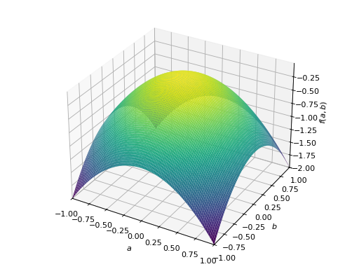

Matrices (linear algebra)¶
Creating Matrices¶
The linear algebra module is designed to be as simple as possible. First, we
import and declare our first Matrix object:
>>> from sympy.interactive.printing import init_printing
>>> init_printing(use_unicode=False, wrap_line=False)
>>> from sympy.matrices import Matrix, eye, zeros, ones, diag, GramSchmidt
>>> M = Matrix([[1,0,0], [0,0,0]]); M
[1 0 0]
[ ]
[0 0 0]
>>> Matrix([M, (0, 0, -1)])
[1 0 0 ]
[ ]
[0 0 0 ]
[ ]
[0 0 -1]
>>> Matrix([[1, 2, 3]])
[1 2 3]
>>> Matrix([1, 2, 3])
[1]
[ ]
[2]
[ ]
[3]
In addition to creating a matrix from a list of appropriately-sized lists and/or matrices, SymPy also supports more advanced methods of matrix creation including a single list of values and dimension inputs:
>>> Matrix(2, 3, [1, 2, 3, 4, 5, 6])
[1 2 3]
[ ]
[4 5 6]
More interesting (and useful), is the ability to use a 2-variable function
(or lambda) to create a matrix. Here we create an indicator function which
is 1 on the diagonal and then use it to make the identity matrix:
>>> def f(i,j):
... if i == j:
... return 1
... else:
... return 0
...
>>> Matrix(4, 4, f)
[1 0 0 0]
[ ]
[0 1 0 0]
[ ]
[0 0 1 0]
[ ]
[0 0 0 1]
Finally let’s use lambda to create a 1-line matrix with 1’s in the even
permutation entries:
>>> Matrix(3, 4, lambda i,j: 1 - (i+j) % 2)
[1 0 1 0]
[ ]
[0 1 0 1]
[ ]
[1 0 1 0]
There are also a couple of special constructors for quick matrix construction:
eye is the identity matrix, zeros and ones for matrices of all
zeros and ones, respectively, and diag to put matrices or elements along
the diagonal:
>>> eye(4)
[1 0 0 0]
[ ]
[0 1 0 0]
[ ]
[0 0 1 0]
[ ]
[0 0 0 1]
>>> zeros(2)
[0 0]
[ ]
[0 0]
>>> zeros(2, 5)
[0 0 0 0 0]
[ ]
[0 0 0 0 0]
>>> ones(3)
[1 1 1]
[ ]
[1 1 1]
[ ]
[1 1 1]
>>> ones(1, 3)
[1 1 1]
>>> diag(1, Matrix([[1, 2], [3, 4]]))
[1 0 0]
[ ]
[0 1 2]
[ ]
[0 3 4]
Basic Manipulation¶
While learning to work with matrices, let’s choose one where the entries are readily identifiable. One useful thing to know is that while matrices are 2-dimensional, the storage is not and so it is allowable - though one should be careful - to access the entries as if they were a 1-d list.
>>> M = Matrix(2, 3, [1, 2, 3, 4, 5, 6])
>>> M[4]
5
Now, the more standard entry access is a pair of indices which will always return the value at the corresponding row and column of the matrix:
>>> M[1, 2]
6
>>> M[0, 0]
1
>>> M[1, 1]
5
Since this is Python we’re also able to slice submatrices; slices always give a matrix in return, even if the dimension is 1 x 1:
>>> M[0:2, 0:2]
[1 2]
[ ]
[4 5]
>>> M[2:2, 2]
[]
>>> M[:, 2]
[3]
[ ]
[6]
>>> M[:1, 2]
[3]
In the second example above notice that the slice 2:2 gives an empty range. Note also (in keeping with 0-based indexing of Python) the first row/column is 0.
You cannot access rows or columns that are not present unless they are in a slice:
>>> M[:, 10] # the 10-th column (not there)
Traceback (most recent call last):
...
IndexError: Index out of range: a[[0, 10]]
>>> M[:, 10:11] # the 10-th column (if there)
[]
>>> M[:, :10] # all columns up to the 10-th
[1 2 3]
[ ]
[4 5 6]
Slicing an empty matrix works as long as you use a slice for the coordinate that has no size:
>>> Matrix(0, 3, [])[:, 1]
[]
Slicing gives a copy of what is sliced, so modifications of one object do not affect the other:
>>> M2 = M[:, :]
>>> M2[0, 0] = 100
>>> M[0, 0] == 100
False
Notice that changing M2 didn’t change M. Since we can slice, we can also assign
entries:
>>> M = Matrix(([1,2,3,4],[5,6,7,8],[9,10,11,12],[13,14,15,16]))
>>> M
[1 2 3 4 ]
[ ]
[5 6 7 8 ]
[ ]
[9 10 11 12]
[ ]
[13 14 15 16]
>>> M[2,2] = M[0,3] = 0
>>> M
[1 2 3 0 ]
[ ]
[5 6 7 8 ]
[ ]
[9 10 0 12]
[ ]
[13 14 15 16]
as well as assign slices:
>>> M = Matrix(([1,2,3,4],[5,6,7,8],[9,10,11,12],[13,14,15,16]))
>>> M[2:,2:] = Matrix(2,2,lambda i,j: 0)
>>> M
[1 2 3 4]
[ ]
[5 6 7 8]
[ ]
[9 10 0 0]
[ ]
[13 14 0 0]
All the standard arithmetic operations are supported:
>>> M = Matrix(([1,2,3],[4,5,6],[7,8,9]))
>>> M - M
[0 0 0]
[ ]
[0 0 0]
[ ]
[0 0 0]
>>> M + M
[2 4 6 ]
[ ]
[8 10 12]
[ ]
[14 16 18]
>>> M * M
[30 36 42 ]
[ ]
[66 81 96 ]
[ ]
[102 126 150]
>>> M2 = Matrix(3,1,[1,5,0])
>>> M*M2
[11]
[ ]
[29]
[ ]
[47]
>>> M**2
[30 36 42 ]
[ ]
[66 81 96 ]
[ ]
[102 126 150]
As well as some useful vector operations:
>>> M.row_del(0)
>>> M
[4 5 6]
[ ]
[7 8 9]
>>> M.col_del(1)
>>> M
[4 6]
[ ]
[7 9]
>>> v1 = Matrix([1,2,3])
>>> v2 = Matrix([4,5,6])
>>> v3 = v1.cross(v2)
>>> v1.dot(v2)
32
>>> v2.dot(v3)
0
>>> v1.dot(v3)
0
Recall that the row_del() and col_del() operations don’t return a value - they
simply change the matrix object. We can also ‘’glue’’ together matrices of the
appropriate size:
>>> M1 = eye(3)
>>> M2 = zeros(3, 4)
>>> M1.row_join(M2)
[1 0 0 0 0 0 0]
[ ]
[0 1 0 0 0 0 0]
[ ]
[0 0 1 0 0 0 0]
>>> M3 = zeros(4, 3)
>>> M1.col_join(M3)
[1 0 0]
[ ]
[0 1 0]
[ ]
[0 0 1]
[ ]
[0 0 0]
[ ]
[0 0 0]
[ ]
[0 0 0]
[ ]
[0 0 0]
Operations on entries¶
We are not restricted to having multiplication between two matrices:
>>> M = eye(3)
>>> 2*M
[2 0 0]
[ ]
[0 2 0]
[ ]
[0 0 2]
>>> 3*M
[3 0 0]
[ ]
[0 3 0]
[ ]
[0 0 3]
but we can also apply functions to our matrix entries using applyfunc(). Here we’ll declare a function that double any input number. Then we apply it to the 3x3 identity matrix:
>>> f = lambda x: 2*x
>>> eye(3).applyfunc(f)
[2 0 0]
[ ]
[0 2 0]
[ ]
[0 0 2]
If you want to extract a common factor from a matrix you can do so by
applying gcd to the data of the matrix:
>>> from sympy.abc import x, y
>>> from sympy import gcd
>>> m = Matrix([[x, y], [1, x*y]]).inv('ADJ'); m
[ x*y -y ]
[-------- --------]
[ 2 2 ]
[x *y - y x *y - y]
[ ]
[ -1 x ]
[-------- --------]
[ 2 2 ]
[x *y - y x *y - y]
>>> gcd(tuple(_))
1
--------
2
x *y - y
>>> m/_
[x*y -y]
[ ]
[-1 x ]
One more useful matrix-wide entry application function is the substitution function. Let’s declare a matrix with symbolic entries then substitute a value. Remember we can substitute anything - even another symbol!:
>>> from sympy import Symbol
>>> x = Symbol('x')
>>> M = eye(3) * x
>>> M
[x 0 0]
[ ]
[0 x 0]
[ ]
[0 0 x]
>>> M.subs(x, 4)
[4 0 0]
[ ]
[0 4 0]
[ ]
[0 0 4]
>>> y = Symbol('y')
>>> M.subs(x, y)
[y 0 0]
[ ]
[0 y 0]
[ ]
[0 0 y]
Linear algebra¶
Now that we have the basics out of the way, let’s see what we can do with the actual matrices. Of course, one of the first things that comes to mind is the determinant:
>>> M = Matrix(( [1, 2, 3], [3, 6, 2], [2, 0, 1] ))
>>> M.det()
-28
>>> M2 = eye(3)
>>> M2.det()
1
>>> M3 = Matrix(( [1, 0, 0], [1, 0, 0], [1, 0, 0] ))
>>> M3.det()
0
Another common operation is the inverse: In SymPy, this is computed by Gaussian elimination by default (for dense matrices) but we can specify it be done by \(LU\) decomposition as well:
>>> M2.inv()
[1 0 0]
[ ]
[0 1 0]
[ ]
[0 0 1]
>>> M2.inv(method="LU")
[1 0 0]
[ ]
[0 1 0]
[ ]
[0 0 1]
>>> M.inv(method="LU")
[-3/14 1/14 1/2 ]
[ ]
[-1/28 5/28 -1/4]
[ ]
[ 3/7 -1/7 0 ]
>>> M * M.inv(method="LU")
[1 0 0]
[ ]
[0 1 0]
[ ]
[0 0 1]
We can perform a \(QR\) factorization which is handy for solving systems:
>>> A = Matrix([[1,1,1],[1,1,3],[2,3,4]])
>>> Q, R = A.QRdecomposition()
>>> Q
[ ___ ___ ___ ]
[\/ 6 -\/ 3 -\/ 2 ]
[----- ------- -------]
[ 6 3 2 ]
[ ]
[ ___ ___ ___ ]
[\/ 6 -\/ 3 \/ 2 ]
[----- ------- ----- ]
[ 6 3 2 ]
[ ]
[ ___ ___ ]
[\/ 6 \/ 3 ]
[----- ----- 0 ]
[ 3 3 ]
>>> R
[ ___ ]
[ ___ 4*\/ 6 ___]
[\/ 6 ------- 2*\/ 6 ]
[ 3 ]
[ ]
[ ___ ]
[ \/ 3 ]
[ 0 ----- 0 ]
[ 3 ]
[ ]
[ ___ ]
[ 0 0 \/ 2 ]
>>> Q*R
[1 1 1]
[ ]
[1 1 3]
[ ]
[2 3 4]
In addition to the solvers in the solver.py file, we can solve the system Ax=b
by passing the b vector to the matrix A’s LUsolve function. Here we’ll cheat a
little choose A and x then multiply to get b. Then we can solve for x and check
that it’s correct:
>>> A = Matrix([ [2, 3, 5], [3, 6, 2], [8, 3, 6] ])
>>> x = Matrix(3,1,[3,7,5])
>>> b = A*x
>>> soln = A.LUsolve(b)
>>> soln
[3]
[ ]
[7]
[ ]
[5]
There’s also a nice Gram-Schmidt orthogonalizer which will take a set of
vectors and orthogonalize them with respect to another. There is an
optional argument which specifies whether or not the output should also be
normalized, it defaults to False. Let’s take some vectors and orthogonalize
them - one normalized and one not:
>>> L = [Matrix([2,3,5]), Matrix([3,6,2]), Matrix([8,3,6])]
>>> out1 = GramSchmidt(L)
>>> out2 = GramSchmidt(L, True)
Let’s take a look at the vectors:
>>> for i in out1:
... print(i)
...
Matrix([[2], [3], [5]])
Matrix([[23/19], [63/19], [-47/19]])
Matrix([[1692/353], [-1551/706], [-423/706]])
>>> for i in out2:
... print(i)
...
Matrix([[sqrt(38)/19], [3*sqrt(38)/38], [5*sqrt(38)/38]])
Matrix([[23*sqrt(6707)/6707], [63*sqrt(6707)/6707], [-47*sqrt(6707)/6707]])
Matrix([[12*sqrt(706)/353], [-11*sqrt(706)/706], [-3*sqrt(706)/706]])
We can spot-check their orthogonality with dot() and their normality with norm():
>>> out1[0].dot(out1[1])
0
>>> out1[0].dot(out1[2])
0
>>> out1[1].dot(out1[2])
0
>>> out2[0].norm()
1
>>> out2[1].norm()
1
>>> out2[2].norm()
1
So there is quite a bit that can be done with the module including eigenvalues,
eigenvectors, nullspace calculation, cofactor expansion tools, and so on. From
here one might want to look over the matrices.py file for all functionality.
MatrixDeterminant Class Reference¶
-
class
sympy.matrices.matrices.MatrixDeterminant[source]¶ Provides basic matrix determinant operations. Should not be instantiated directly. See
determinant.pyfor their implementations.-
adjugate(method='berkowitz')[source]¶ Returns the adjugate, or classical adjoint, of a matrix. That is, the transpose of the matrix of cofactors.
https://en.wikipedia.org/wiki/Adjugate
- Parameters
method : string, optional
Method to use to find the cofactors, can be “bareiss”, “berkowitz” or “lu”.
Examples
>>> from sympy import Matrix >>> M = Matrix([[1, 2], [3, 4]]) >>> M.adjugate() Matrix([ [ 4, -2], [-3, 1]])
-
charpoly(x='lambda', simplify=<function simplify>)[source]¶ Computes characteristic polynomial det(x*I - M) where I is the identity matrix.
A PurePoly is returned, so using different variables for
xdoes not affect the comparison or the polynomials:- Parameters
x : string, optional
Name for the “lambda” variable, defaults to “lambda”.
simplify : function, optional
Simplification function to use on the characteristic polynomial calculated. Defaults to
simplify.
Examples
>>> from sympy import Matrix >>> from sympy.abc import x, y >>> M = Matrix([[1, 3], [2, 0]]) >>> M.charpoly() PurePoly(lambda**2 - lambda - 6, lambda, domain='ZZ') >>> M.charpoly(x) == M.charpoly(y) True >>> M.charpoly(x) == M.charpoly(y) True
Specifying
xis optional; a symbol namedlambdais used by default (which looks good when pretty-printed in unicode):>>> M.charpoly().as_expr() lambda**2 - lambda - 6
And if
xclashes with an existing symbol, underscores will be prepended to the name to make it unique:>>> M = Matrix([[1, 2], [x, 0]]) >>> M.charpoly(x).as_expr() _x**2 - _x - 2*x
Whether you pass a symbol or not, the generator can be obtained with the gen attribute since it may not be the same as the symbol that was passed:
>>> M.charpoly(x).gen _x >>> M.charpoly(x).gen == x False
Notes
The Samuelson-Berkowitz algorithm is used to compute the characteristic polynomial efficiently and without any division operations. Thus the characteristic polynomial over any commutative ring without zero divisors can be computed.
If the determinant det(x*I - M) can be found out easily as in the case of an upper or a lower triangular matrix, then instead of Samuelson-Berkowitz algorithm, eigenvalues are computed and the characteristic polynomial with their help.
See also
-
cofactor(i, j, method='berkowitz')[source]¶ Calculate the cofactor of an element.
- Parameters
method : string, optional
Method to use to find the cofactors, can be “bareiss”, “berkowitz” or “lu”.
Examples
>>> from sympy import Matrix >>> M = Matrix([[1, 2], [3, 4]]) >>> M.cofactor(0, 1) -3
See also
-
cofactor_matrix(method='berkowitz')[source]¶ Return a matrix containing the cofactor of each element.
- Parameters
method : string, optional
Method to use to find the cofactors, can be “bareiss”, “berkowitz” or “lu”.
Examples
>>> from sympy import Matrix >>> M = Matrix([[1, 2], [3, 4]]) >>> M.cofactor_matrix() Matrix([ [ 4, -3], [-2, 1]])
See also
-
det(method='bareiss', iszerofunc=None)[source]¶ Computes the determinant of a matrix if
Mis a concrete matrix object otherwise return an expressionsDeterminant(M)ifMis aMatrixSymbolor other expression.- Parameters
method : string, optional
Specifies the algorithm used for computing the matrix determinant.
If the matrix is at most 3x3, a hard-coded formula is used and the specified method is ignored. Otherwise, it defaults to
'bareiss'.Also, if the matrix is an upper or a lower triangular matrix, determinant is computed by simple multiplication of diagonal elements, and the specified method is ignored.
If it is set to
'bareiss', Bareiss’ fraction-free algorithm will be used.If it is set to
'berkowitz', Berkowitz’ algorithm will be used.Otherwise, if it is set to
'lu', LU decomposition will be used.Note
For backward compatibility, legacy keys like “bareis” and “det_lu” can still be used to indicate the corresponding methods. And the keys are also case-insensitive for now. However, it is suggested to use the precise keys for specifying the method.
iszerofunc : FunctionType or None, optional
If it is set to
None, it will be defaulted to_iszeroif the method is set to'bareiss', and_is_zero_after_expand_mulif the method is set to'lu'.It can also accept any user-specified zero testing function, if it is formatted as a function which accepts a single symbolic argument and returns
Trueif it is tested as zero andFalseif it tested as non-zero, and alsoNoneif it is undecidable.- Returns
det : Basic
Result of determinant.
- Raises
ValueError
If unrecognized keys are given for
methodoriszerofunc.NonSquareMatrixError
If attempted to calculate determinant from a non-square matrix.
Examples
>>> from sympy import Matrix, eye, det >>> I3 = eye(3) >>> det(I3) 1 >>> M = Matrix([[1, 2], [3, 4]]) >>> det(M) -2 >>> det(M) == M.det() True
-
minor(i, j, method='berkowitz')[source]¶ Return the (i,j) minor of
M. That is, return the determinant of the matrix obtained by deleting the \(i\).- Parameters
i, j : int
The row and column to exclude to obtain the submatrix.
method : string, optional
Method to use to find the determinant of the submatrix, can be “bareiss”, “berkowitz” or “lu”.
Examples
>>> from sympy import Matrix >>> M = Matrix([[1, 2, 3], [4, 5, 6], [7, 8, 9]]) >>> M.minor(1, 1) -12
See also
-
minor_submatrix(i, j)[source]¶ Return the submatrix obtained by removing the \(i\) (works with Pythonic negative indices).
- Parameters
i, j : int
The row and column to exclude to obtain the submatrix.
Examples
>>> from sympy import Matrix >>> M = Matrix([[1, 2, 3], [4, 5, 6], [7, 8, 9]]) >>> M.minor_submatrix(1, 1) Matrix([ [1, 3], [7, 9]])
-
MatrixReductions Class Reference¶
-
class
sympy.matrices.matrices.MatrixReductions[source]¶ Provides basic matrix row/column operations. Should not be instantiated directly. See
reductions.pyfor some of their implementations.-
echelon_form(iszerofunc=<function _iszero>, simplify=False, with_pivots=False)[source]¶ Returns a matrix row-equivalent to
Mthat is in echelon form. Note that echelon form of a matrix is not unique, however, properties like the row space and the null space are preserved.Examples
>>> from sympy import Matrix >>> M = Matrix([[1, 2], [3, 4]]) >>> M.echelon_form() Matrix([ [1, 2], [0, -2]])
-
elementary_col_op(op='n->kn', col=None, k=None, col1=None, col2=None)[source]¶ Performs the elementary column operation \(op\).
\(op\) may be one of
“n->kn” (column n goes to k*n)
“n<->m” (swap column n and column m)
“n->n+km” (column n goes to column n + k*column m)
- Parameters
op : string; the elementary row operation
col : the column to apply the column operation
k : the multiple to apply in the column operation
col1 : one column of a column swap
col2 : second column of a column swap or column “m” in the column operation
“n->n+km”
-
elementary_row_op(op='n->kn', row=None, k=None, row1=None, row2=None)[source]¶ Performs the elementary row operation \(op\).
\(op\) may be one of
“n->kn” (row n goes to k*n)
“n<->m” (swap row n and row m)
“n->n+km” (row n goes to row n + k*row m)
- Parameters
op : string; the elementary row operation
row : the row to apply the row operation
k : the multiple to apply in the row operation
row1 : one row of a row swap
row2 : second row of a row swap or row “m” in the row operation
“n->n+km”
-
property
is_echelon¶ Returns \(True\) if the matrix is in echelon form. That is, all rows of zeros are at the bottom, and below each leading non-zero in a row are exclusively zeros.
-
rank(iszerofunc=<function _iszero>, simplify=False)[source]¶ Returns the rank of a matrix.
Examples
>>> from sympy import Matrix >>> from sympy.abc import x >>> m = Matrix([[1, 2], [x, 1 - 1/x]]) >>> m.rank() 2 >>> n = Matrix(3, 3, range(1, 10)) >>> n.rank() 2
-
rref(iszerofunc=<function _iszero>, simplify=False, pivots=True, normalize_last=True)[source]¶ Return reduced row-echelon form of matrix and indices of pivot vars.
- Parameters
iszerofunc : Function
A function used for detecting whether an element can act as a pivot.
lambda x: x.is_zerois used by default.simplify : Function
A function used to simplify elements when looking for a pivot. By default SymPy’s
simplifyis used.pivots : True or False
If
True, a tuple containing the row-reduced matrix and a tuple of pivot columns is returned. IfFalsejust the row-reduced matrix is returned.normalize_last : True or False
If
True, no pivots are normalized to \(1\) until after all entries above and below each pivot are zeroed. This means the row reduction algorithm is fraction free until the very last step. IfFalse, the naive row reduction procedure is used where each pivot is normalized to be \(1\) before row operations are used to zero above and below the pivot.
Examples
>>> from sympy import Matrix >>> from sympy.abc import x >>> m = Matrix([[1, 2], [x, 1 - 1/x]]) >>> m.rref() (Matrix([ [1, 0], [0, 1]]), (0, 1)) >>> rref_matrix, rref_pivots = m.rref() >>> rref_matrix Matrix([ [1, 0], [0, 1]]) >>> rref_pivots (0, 1)
Notes
The default value of
normalize_last=Truecan provide significant speedup to row reduction, especially on matrices with symbols. However, if you depend on the form row reduction algorithm leaves entries of the matrix, setnoramlize_last=False
-
MatrixSubspaces Class Reference¶
-
class
sympy.matrices.matrices.MatrixSubspaces[source]¶ Provides methods relating to the fundamental subspaces of a matrix. Should not be instantiated directly. See
subspaces.pyfor their implementations.-
columnspace(simplify=False)[source]¶ Returns a list of vectors (Matrix objects) that span columnspace of
MExamples
>>> from sympy.matrices import Matrix >>> M = Matrix(3, 3, [1, 3, 0, -2, -6, 0, 3, 9, 6]) >>> M Matrix([ [ 1, 3, 0], [-2, -6, 0], [ 3, 9, 6]]) >>> M.columnspace() [Matrix([ [ 1], [-2], [ 3]]), Matrix([ [0], [0], [6]])]
-
nullspace(simplify=False, iszerofunc=<function _iszero>)[source]¶ Returns list of vectors (Matrix objects) that span nullspace of
MExamples
>>> from sympy.matrices import Matrix >>> M = Matrix(3, 3, [1, 3, 0, -2, -6, 0, 3, 9, 6]) >>> M Matrix([ [ 1, 3, 0], [-2, -6, 0], [ 3, 9, 6]]) >>> M.nullspace() [Matrix([ [-3], [ 1], [ 0]])]
See also
-
classmethod
orthogonalize(*vecs, **kwargs)[source]¶ Apply the Gram-Schmidt orthogonalization procedure to vectors supplied in
vecs.- Parameters
vecs
vectors to be made orthogonal
normalize : bool
If
True, return an orthonormal basis.rankcheck : bool
If
True, the computation does not stop when encountering linearly dependent vectors.If
False, it will raiseValueErrorwhen any zero or linearly dependent vectors are found.- Returns
list
List of orthogonal (or orthonormal) basis vectors.
Examples
>>> from sympy import I, Matrix >>> v = [Matrix([1, I]), Matrix([1, -I])] >>> Matrix.orthogonalize(*v) [Matrix([ [1], [I]]), Matrix([ [ 1], [-I]])]
See also
References
-
MatrixEigen Class Reference¶
-
class
sympy.matrices.matrices.MatrixEigen[source]¶ Provides basic matrix eigenvalue/vector operations. Should not be instantiated directly. See
eigen.pyfor their implementations.-
bidiagonal_decomposition(upper=True)[source]¶ Returns (U,B,V.H)
\(A = UBV^{H}\)
where A is the input matrix, and B is its Bidiagonalized form
Note: Bidiagonal Computation can hang for symbolic matrices.
- Parameters
upper : bool. Whether to do upper bidiagnalization or lower.
True for upper and False for lower.
References
Algorith 5.4.2, Matrix computations by Golub and Van Loan, 4th edition
Complex Matrix Bidiagonalization : https://github.com/vslobody/Householder-Bidiagonalization
-
bidiagonalize(upper=True)[source]¶ Returns \(B\), the Bidiagonalized form of the input matrix.
Note: Bidiagonal Computation can hang for symbolic matrices.
- Parameters
upper : bool. Whether to do upper bidiagnalization or lower.
True for upper and False for lower.
References
Algorith 5.4.2, Matrix computations by Golub and Van Loan, 4th edition
Complex Matrix Bidiagonalization : https://github.com/vslobody/Householder-Bidiagonalization
-
diagonalize(reals_only=False, sort=False, normalize=False)[source]¶ Return (P, D), where D is diagonal and
D = P^-1 * M * P
where M is current matrix.
- Parameters
reals_only : bool. Whether to throw an error if complex numbers are need
to diagonalize. (Default: False)
sort : bool. Sort the eigenvalues along the diagonal. (Default: False)
normalize : bool. If True, normalize the columns of P. (Default: False)
Examples
>>> from sympy.matrices import Matrix >>> M = Matrix(3, 3, [1, 2, 0, 0, 3, 0, 2, -4, 2]) >>> M Matrix([ [1, 2, 0], [0, 3, 0], [2, -4, 2]]) >>> (P, D) = M.diagonalize() >>> D Matrix([ [1, 0, 0], [0, 2, 0], [0, 0, 3]]) >>> P Matrix([ [-1, 0, -1], [ 0, 0, -1], [ 2, 1, 2]]) >>> P.inv() * M * P Matrix([ [1, 0, 0], [0, 2, 0], [0, 0, 3]])
See also
-
eigenvals(error_when_incomplete=True, **flags)[source]¶ Return eigenvalues using the Berkowitz algorithm to compute the characteristic polynomial.
- Parameters
error_when_incomplete : bool, optional
If it is set to
True, it will raise an error if not all eigenvalues are computed. This is caused byrootsnot returning a full list of eigenvalues.simplify : bool or function, optional
If it is set to
True, it attempts to return the most simplified form of expressions returned by applying default simplification method in every routine.If it is set to
False, it will skip simplification in this particular routine to save computation resources.If a function is passed to, it will attempt to apply the particular function as simplification method.
rational : bool, optional
If it is set to
True, every floating point numbers would be replaced with rationals before computation. It can solve some issues ofrootsroutine not working well with floats.multiple : bool, optional
If it is set to
True, the result will be in the form of a list.If it is set to
False, the result will be in the form of a dictionary.- Returns
eigs : list or dict
Eigenvalues of a matrix. The return format would be specified by the key
multiple.- Raises
MatrixError
If not enough roots had got computed.
NonSquareMatrixError
If attempted to compute eigenvalues from a non-square matrix.
Examples
>>> from sympy.matrices import Matrix >>> M = Matrix(3, 3, [0, 1, 1, 1, 0, 0, 1, 1, 1]) >>> M.eigenvals() {-1: 1, 0: 1, 2: 1}
Notes
Eigenvalues of a matrix \(A\) can be computed by solving a matrix equation \(\det(A - \lambda I) = 0\)
See also
-
eigenvects(error_when_incomplete=True, iszerofunc=<function _iszero>, **flags)[source]¶ Return list of triples (eigenval, multiplicity, eigenspace).
- Parameters
error_when_incomplete : bool, optional
Raise an error when not all eigenvalues are computed. This is caused by
rootsnot returning a full list of eigenvalues.iszerofunc : function, optional
Specifies a zero testing function to be used in
rref.Default value is
_iszero, which uses SymPy’s naive and fast default assumption handler.It can also accept any user-specified zero testing function, if it is formatted as a function which accepts a single symbolic argument and returns
Trueif it is tested as zero andFalseif it is tested as non-zero, andNoneif it is undecidable.simplify : bool or function, optional
If
True,as_content_primitive()will be used to tidy up normalization artifacts.It will also be used by the
nullspaceroutine.chop : bool or positive number, optional
If the matrix contains any Floats, they will be changed to Rationals for computation purposes, but the answers will be returned after being evaluated with evalf. The
chopflag is passed toevalf. Whenchop=Truea default precision will be used; a number will be interpreted as the desired level of precision.- Returns
ret : [(eigenval, multiplicity, eigenspace), …]
A ragged list containing tuples of data obtained by
eigenvalsandnullspace.eigenspaceis a list containing theeigenvectorfor each eigenvalue.eigenvectoris a vector in the form of aMatrix. e.g. a vector of length 3 is returned asMatrix([a_1, a_2, a_3]).- Raises
NotImplementedError
If failed to compute nullspace.
Examples
>>> from sympy.matrices import Matrix >>> M = Matrix(3, 3, [0, 1, 1, 1, 0, 0, 1, 1, 1]) >>> M.eigenvects() [(-1, 1, [Matrix([ [-1], [ 1], [ 0]])]), (0, 1, [Matrix([ [ 0], [-1], [ 1]])]), (2, 1, [Matrix([ [2/3], [1/3], [ 1]])])]
See also
-
is_diagonalizable(reals_only=False, **kwargs)[source]¶ Returns
Trueif a matrix is diagonalizable.- Parameters
reals_only : bool, optional
If
True, it tests whether the matrix can be diagonalized to contain only real numbers on the diagonal.If
False, it tests whether the matrix can be diagonalized at all, even with numbers that may not be real.
Examples
Example of a diagonalizable matrix:
>>> from sympy import Matrix >>> M = Matrix([[1, 2, 0], [0, 3, 0], [2, -4, 2]]) >>> M.is_diagonalizable() True
Example of a non-diagonalizable matrix:
>>> M = Matrix([[0, 1], [0, 0]]) >>> M.is_diagonalizable() False
Example of a matrix that is diagonalized in terms of non-real entries:
>>> M = Matrix([[0, 1], [-1, 0]]) >>> M.is_diagonalizable(reals_only=False) True >>> M.is_diagonalizable(reals_only=True) False
See also
-
property
is_indefinite¶ Finds out the definiteness of a matrix.
Explanation
A square real matrix \(A\) is:
A positive definite matrix if \(x^T A x > 0\) for all non-zero real vectors \(x\).
A positive semidefinite matrix if \(x^T A x \geq 0\) for all non-zero real vectors \(x\).
A negative definite matrix if \(x^T A x < 0\) for all non-zero real vectors \(x\).
A negative semidefinite matrix if \(x^T A x \leq 0\) for all non-zero real vectors \(x\).
An indefinite matrix if there exists non-zero real vectors \(x, y\) with \(x^T A x > 0 > y^T A y\).
A square complex matrix \(A\) is:
A positive definite matrix if \(\text{re}(x^H A x) > 0\) for all non-zero complex vectors \(x\).
A positive semidefinite matrix if \(\text{re}(x^H A x) \geq 0\) for all non-zero complex vectors \(x\).
A negative definite matrix if \(\text{re}(x^H A x) < 0\) for all non-zero complex vectors \(x\).
A negative semidefinite matrix if \(\text{re}(x^H A x) \leq 0\) for all non-zero complex vectors \(x\).
An indefinite matrix if there exists non-zero complex vectors \(x, y\) with \(\text{re}(x^H A x) > 0 > \text{re}(y^H A y)\).
A matrix need not be symmetric or hermitian to be positive definite.
A real non-symmetric matrix is positive definite if and only if \(\frac{A + A^T}{2}\) is positive definite.
A complex non-hermitian matrix is positive definite if and only if \(\frac{A + A^H}{2}\) is positive definite.
And this extension can apply for all the definitions above.
However, for complex cases, you can restrict the definition of \(\text{re}(x^H A x) > 0\) to \(x^H A x > 0\) and require the matrix to be hermitian. But we do not present this restriction for computation because you can check
M.is_hermitianindependently with this and use the same procedure.Examples
An example of symmetric positive definite matrix:
>>> from sympy import Matrix, symbols >>> from sympy.plotting import plot3d >>> a, b = symbols('a b') >>> x = Matrix([a, b])
>>> A = Matrix([[1, 0], [0, 1]]) >>> A.is_positive_definite True >>> A.is_positive_semidefinite True
>>> p = plot3d((x.T*A*x)[0, 0], (a, -1, 1), (b, -1, 1))

An example of symmetric positive semidefinite matrix:
>>> A = Matrix([[1, -1], [-1, 1]]) >>> A.is_positive_definite False >>> A.is_positive_semidefinite True
>>> p = plot3d((x.T*A*x)[0, 0], (a, -1, 1), (b, -1, 1))

An example of symmetric negative definite matrix:
>>> A = Matrix([[-1, 0], [0, -1]]) >>> A.is_negative_definite True >>> A.is_negative_semidefinite True >>> A.is_indefinite False
>>> p = plot3d((x.T*A*x)[0, 0], (a, -1, 1), (b, -1, 1))

An example of symmetric indefinite matrix:
>>> A = Matrix([[1, 2], [2, -1]]) >>> A.is_indefinite True
>>> p = plot3d((x.T*A*x)[0, 0], (a, -1, 1), (b, -1, 1))

An example of non-symmetric positive definite matrix.
>>> A = Matrix([[1, 2], [-2, 1]]) >>> A.is_positive_definite True >>> A.is_positive_semidefinite True
>>> p = plot3d((x.T*A*x)[0, 0], (a, -1, 1), (b, -1, 1))

Notes
Although some people trivialize the definition of positive definite matrices only for symmetric or hermitian matrices, this restriction is not correct because it does not classify all instances of positive definite matrices from the definition \(x^T A x > 0\) or \(\text{re}(x^H A x) > 0\).
For instance,
Matrix([[1, 2], [-2, 1]])presented in the example above is an example of real positive definite matrix that is not symmetric.However, since the following formula holds true;
\[\text{re}(x^H A x) > 0 \iff \text{re}(x^H \frac{A + A^H}{2} x) > 0\]We can classify all positive definite matrices that may or may not be symmetric or hermitian by transforming the matrix to \(\frac{A + A^T}{2}\) or \(\frac{A + A^H}{2}\) (which is guaranteed to be always real symmetric or complex hermitian) and we can defer most of the studies to symmetric or hermitian positive definite matrices.
But it is a different problem for the existance of Cholesky decomposition. Because even though a non symmetric or a non hermitian matrix can be positive definite, Cholesky or LDL decomposition does not exist because the decompositions require the matrix to be symmetric or hermitian.
References
- R507
https://en.wikipedia.org/wiki/Definiteness_of_a_matrix#Eigenvalues
- R508
- R509
Johnson, C. R. “Positive Definite Matrices.” Amer. Math. Monthly 77, 259-264 1970.
-
property
is_negative_definite¶ Finds out the definiteness of a matrix.
Explanation
A square real matrix \(A\) is:
A positive definite matrix if \(x^T A x > 0\) for all non-zero real vectors \(x\).
A positive semidefinite matrix if \(x^T A x \geq 0\) for all non-zero real vectors \(x\).
A negative definite matrix if \(x^T A x < 0\) for all non-zero real vectors \(x\).
A negative semidefinite matrix if \(x^T A x \leq 0\) for all non-zero real vectors \(x\).
An indefinite matrix if there exists non-zero real vectors \(x, y\) with \(x^T A x > 0 > y^T A y\).
A square complex matrix \(A\) is:
A positive definite matrix if \(\text{re}(x^H A x) > 0\) for all non-zero complex vectors \(x\).
A positive semidefinite matrix if \(\text{re}(x^H A x) \geq 0\) for all non-zero complex vectors \(x\).
A negative definite matrix if \(\text{re}(x^H A x) < 0\) for all non-zero complex vectors \(x\).
A negative semidefinite matrix if \(\text{re}(x^H A x) \leq 0\) for all non-zero complex vectors \(x\).
An indefinite matrix if there exists non-zero complex vectors \(x, y\) with \(\text{re}(x^H A x) > 0 > \text{re}(y^H A y)\).
A matrix need not be symmetric or hermitian to be positive definite.
A real non-symmetric matrix is positive definite if and only if \(\frac{A + A^T}{2}\) is positive definite.
A complex non-hermitian matrix is positive definite if and only if \(\frac{A + A^H}{2}\) is positive definite.
And this extension can apply for all the definitions above.
However, for complex cases, you can restrict the definition of \(\text{re}(x^H A x) > 0\) to \(x^H A x > 0\) and require the matrix to be hermitian. But we do not present this restriction for computation because you can check
M.is_hermitianindependently with this and use the same procedure.Examples
An example of symmetric positive definite matrix:
>>> from sympy import Matrix, symbols >>> from sympy.plotting import plot3d >>> a, b = symbols('a b') >>> x = Matrix([a, b])
>>> A = Matrix([[1, 0], [0, 1]]) >>> A.is_positive_definite True >>> A.is_positive_semidefinite True
>>> p = plot3d((x.T*A*x)[0, 0], (a, -1, 1), (b, -1, 1))

An example of symmetric positive semidefinite matrix:
>>> A = Matrix([[1, -1], [-1, 1]]) >>> A.is_positive_definite False >>> A.is_positive_semidefinite True
>>> p = plot3d((x.T*A*x)[0, 0], (a, -1, 1), (b, -1, 1))

An example of symmetric negative definite matrix:
>>> A = Matrix([[-1, 0], [0, -1]]) >>> A.is_negative_definite True >>> A.is_negative_semidefinite True >>> A.is_indefinite False
>>> p = plot3d((x.T*A*x)[0, 0], (a, -1, 1), (b, -1, 1))

An example of symmetric indefinite matrix:
>>> A = Matrix([[1, 2], [2, -1]]) >>> A.is_indefinite True
>>> p = plot3d((x.T*A*x)[0, 0], (a, -1, 1), (b, -1, 1))

An example of non-symmetric positive definite matrix.
>>> A = Matrix([[1, 2], [-2, 1]]) >>> A.is_positive_definite True >>> A.is_positive_semidefinite True
>>> p = plot3d((x.T*A*x)[0, 0], (a, -1, 1), (b, -1, 1))

Notes
Although some people trivialize the definition of positive definite matrices only for symmetric or hermitian matrices, this restriction is not correct because it does not classify all instances of positive definite matrices from the definition \(x^T A x > 0\) or \(\text{re}(x^H A x) > 0\).
For instance,
Matrix([[1, 2], [-2, 1]])presented in the example above is an example of real positive definite matrix that is not symmetric.However, since the following formula holds true;
\[\text{re}(x^H A x) > 0 \iff \text{re}(x^H \frac{A + A^H}{2} x) > 0\]We can classify all positive definite matrices that may or may not be symmetric or hermitian by transforming the matrix to \(\frac{A + A^T}{2}\) or \(\frac{A + A^H}{2}\) (which is guaranteed to be always real symmetric or complex hermitian) and we can defer most of the studies to symmetric or hermitian positive definite matrices.
But it is a different problem for the existance of Cholesky decomposition. Because even though a non symmetric or a non hermitian matrix can be positive definite, Cholesky or LDL decomposition does not exist because the decompositions require the matrix to be symmetric or hermitian.
References
- R510
https://en.wikipedia.org/wiki/Definiteness_of_a_matrix#Eigenvalues
- R511
- R512
Johnson, C. R. “Positive Definite Matrices.” Amer. Math. Monthly 77, 259-264 1970.
-
property
is_negative_semidefinite¶ Finds out the definiteness of a matrix.
Explanation
A square real matrix \(A\) is:
A positive definite matrix if \(x^T A x > 0\) for all non-zero real vectors \(x\).
A positive semidefinite matrix if \(x^T A x \geq 0\) for all non-zero real vectors \(x\).
A negative definite matrix if \(x^T A x < 0\) for all non-zero real vectors \(x\).
A negative semidefinite matrix if \(x^T A x \leq 0\) for all non-zero real vectors \(x\).
An indefinite matrix if there exists non-zero real vectors \(x, y\) with \(x^T A x > 0 > y^T A y\).
A square complex matrix \(A\) is:
A positive definite matrix if \(\text{re}(x^H A x) > 0\) for all non-zero complex vectors \(x\).
A positive semidefinite matrix if \(\text{re}(x^H A x) \geq 0\) for all non-zero complex vectors \(x\).
A negative definite matrix if \(\text{re}(x^H A x) < 0\) for all non-zero complex vectors \(x\).
A negative semidefinite matrix if \(\text{re}(x^H A x) \leq 0\) for all non-zero complex vectors \(x\).
An indefinite matrix if there exists non-zero complex vectors \(x, y\) with \(\text{re}(x^H A x) > 0 > \text{re}(y^H A y)\).
A matrix need not be symmetric or hermitian to be positive definite.
A real non-symmetric matrix is positive definite if and only if \(\frac{A + A^T}{2}\) is positive definite.
A complex non-hermitian matrix is positive definite if and only if \(\frac{A + A^H}{2}\) is positive definite.
And this extension can apply for all the definitions above.
However, for complex cases, you can restrict the definition of \(\text{re}(x^H A x) > 0\) to \(x^H A x > 0\) and require the matrix to be hermitian. But we do not present this restriction for computation because you can check
M.is_hermitianindependently with this and use the same procedure.Examples
An example of symmetric positive definite matrix:
>>> from sympy import Matrix, symbols >>> from sympy.plotting import plot3d >>> a, b = symbols('a b') >>> x = Matrix([a, b])
>>> A = Matrix([[1, 0], [0, 1]]) >>> A.is_positive_definite True >>> A.is_positive_semidefinite True
>>> p = plot3d((x.T*A*x)[0, 0], (a, -1, 1), (b, -1, 1))
An example of symmetric positive semidefinite matrix:
>>> A = Matrix([[1, -1], [-1, 1]]) >>> A.is_positive_definite False >>> A.is_positive_semidefinite True
>>> p = plot3d((x.T*A*x)[0, 0], (a, -1, 1), (b, -1, 1))

An example of symmetric negative definite matrix:
>>> A = Matrix([[-1, 0], [0, -1]]) >>> A.is_negative_definite True >>> A.is_negative_semidefinite True >>> A.is_indefinite False
>>> p = plot3d((x.T*A*x)[0, 0], (a, -1, 1), (b, -1, 1))
An example of symmetric indefinite matrix:
>>> A = Matrix([[1, 2], [2, -1]]) >>> A.is_indefinite True
>>> p = plot3d((x.T*A*x)[0, 0], (a, -1, 1), (b, -1, 1))

An example of non-symmetric positive definite matrix.
>>> A = Matrix([[1, 2], [-2, 1]]) >>> A.is_positive_definite True >>> A.is_positive_semidefinite True
>>> p = plot3d((x.T*A*x)[0, 0], (a, -1, 1), (b, -1, 1))

Notes
Although some people trivialize the definition of positive definite matrices only for symmetric or hermitian matrices, this restriction is not correct because it does not classify all instances of positive definite matrices from the definition \(x^T A x > 0\) or \(\text{re}(x^H A x) > 0\).
For instance,
Matrix([[1, 2], [-2, 1]])presented in the example above is an example of real positive definite matrix that is not symmetric.However, since the following formula holds true;
\[\text{re}(x^H A x) > 0 \iff \text{re}(x^H \frac{A + A^H}{2} x) > 0\]We can classify all positive definite matrices that may or may not be symmetric or hermitian by transforming the matrix to \(\frac{A + A^T}{2}\) or \(\frac{A + A^H}{2}\) (which is guaranteed to be always real symmetric or complex hermitian) and we can defer most of the studies to symmetric or hermitian positive definite matrices.
But it is a different problem for the existance of Cholesky decomposition. Because even though a non symmetric or a non hermitian matrix can be positive definite, Cholesky or LDL decomposition does not exist because the decompositions require the matrix to be symmetric or hermitian.
References
- R513
https://en.wikipedia.org/wiki/Definiteness_of_a_matrix#Eigenvalues
- R514
- R515
Johnson, C. R. “Positive Definite Matrices.” Amer. Math. Monthly 77, 259-264 1970.
-
property
is_positive_definite¶ Finds out the definiteness of a matrix.
Explanation
A square real matrix \(A\) is:
A positive definite matrix if \(x^T A x > 0\) for all non-zero real vectors \(x\).
A positive semidefinite matrix if \(x^T A x \geq 0\) for all non-zero real vectors \(x\).
A negative definite matrix if \(x^T A x < 0\) for all non-zero real vectors \(x\).
A negative semidefinite matrix if \(x^T A x \leq 0\) for all non-zero real vectors \(x\).
An indefinite matrix if there exists non-zero real vectors \(x, y\) with \(x^T A x > 0 > y^T A y\).
A square complex matrix \(A\) is:
A positive definite matrix if \(\text{re}(x^H A x) > 0\) for all non-zero complex vectors \(x\).
A positive semidefinite matrix if \(\text{re}(x^H A x) \geq 0\) for all non-zero complex vectors \(x\).
A negative definite matrix if \(\text{re}(x^H A x) < 0\) for all non-zero complex vectors \(x\).
A negative semidefinite matrix if \(\text{re}(x^H A x) \leq 0\) for all non-zero complex vectors \(x\).
An indefinite matrix if there exists non-zero complex vectors \(x, y\) with \(\text{re}(x^H A x) > 0 > \text{re}(y^H A y)\).
A matrix need not be symmetric or hermitian to be positive definite.
A real non-symmetric matrix is positive definite if and only if \(\frac{A + A^T}{2}\) is positive definite.
A complex non-hermitian matrix is positive definite if and only if \(\frac{A + A^H}{2}\) is positive definite.
And this extension can apply for all the definitions above.
However, for complex cases, you can restrict the definition of \(\text{re}(x^H A x) > 0\) to \(x^H A x > 0\) and require the matrix to be hermitian. But we do not present this restriction for computation because you can check
M.is_hermitianindependently with this and use the same procedure.Examples
An example of symmetric positive definite matrix:
>>> from sympy import Matrix, symbols >>> from sympy.plotting import plot3d >>> a, b = symbols('a b') >>> x = Matrix([a, b])
>>> A = Matrix([[1, 0], [0, 1]]) >>> A.is_positive_definite True >>> A.is_positive_semidefinite True
>>> p = plot3d((x.T*A*x)[0, 0], (a, -1, 1), (b, -1, 1))

An example of symmetric positive semidefinite matrix:
>>> A = Matrix([[1, -1], [-1, 1]]) >>> A.is_positive_definite False >>> A.is_positive_semidefinite True
>>> p = plot3d((x.T*A*x)[0, 0], (a, -1, 1), (b, -1, 1))

An example of symmetric negative definite matrix:
>>> A = Matrix([[-1, 0], [0, -1]]) >>> A.is_negative_definite True >>> A.is_negative_semidefinite True >>> A.is_indefinite False
>>> p = plot3d((x.T*A*x)[0, 0], (a, -1, 1), (b, -1, 1))

An example of symmetric indefinite matrix:
>>> A = Matrix([[1, 2], [2, -1]]) >>> A.is_indefinite True
>>> p = plot3d((x.T*A*x)[0, 0], (a, -1, 1), (b, -1, 1))

An example of non-symmetric positive definite matrix.
>>> A = Matrix([[1, 2], [-2, 1]]) >>> A.is_positive_definite True >>> A.is_positive_semidefinite True
>>> p = plot3d((x.T*A*x)[0, 0], (a, -1, 1), (b, -1, 1))

Notes
Although some people trivialize the definition of positive definite matrices only for symmetric or hermitian matrices, this restriction is not correct because it does not classify all instances of positive definite matrices from the definition \(x^T A x > 0\) or \(\text{re}(x^H A x) > 0\).
For instance,
Matrix([[1, 2], [-2, 1]])presented in the example above is an example of real positive definite matrix that is not symmetric.However, since the following formula holds true;
\[\text{re}(x^H A x) > 0 \iff \text{re}(x^H \frac{A + A^H}{2} x) > 0\]We can classify all positive definite matrices that may or may not be symmetric or hermitian by transforming the matrix to \(\frac{A + A^T}{2}\) or \(\frac{A + A^H}{2}\) (which is guaranteed to be always real symmetric or complex hermitian) and we can defer most of the studies to symmetric or hermitian positive definite matrices.
But it is a different problem for the existance of Cholesky decomposition. Because even though a non symmetric or a non hermitian matrix can be positive definite, Cholesky or LDL decomposition does not exist because the decompositions require the matrix to be symmetric or hermitian.
References
- R516
https://en.wikipedia.org/wiki/Definiteness_of_a_matrix#Eigenvalues
- R517
- R518
Johnson, C. R. “Positive Definite Matrices.” Amer. Math. Monthly 77, 259-264 1970.
-
property
is_positive_semidefinite¶ Finds out the definiteness of a matrix.
Explanation
A square real matrix \(A\) is:
A positive definite matrix if \(x^T A x > 0\) for all non-zero real vectors \(x\).
A positive semidefinite matrix if \(x^T A x \geq 0\) for all non-zero real vectors \(x\).
A negative definite matrix if \(x^T A x < 0\) for all non-zero real vectors \(x\).
A negative semidefinite matrix if \(x^T A x \leq 0\) for all non-zero real vectors \(x\).
An indefinite matrix if there exists non-zero real vectors \(x, y\) with \(x^T A x > 0 > y^T A y\).
A square complex matrix \(A\) is:
A positive definite matrix if \(\text{re}(x^H A x) > 0\) for all non-zero complex vectors \(x\).
A positive semidefinite matrix if \(\text{re}(x^H A x) \geq 0\) for all non-zero complex vectors \(x\).
A negative definite matrix if \(\text{re}(x^H A x) < 0\) for all non-zero complex vectors \(x\).
A negative semidefinite matrix if \(\text{re}(x^H A x) \leq 0\) for all non-zero complex vectors \(x\).
An indefinite matrix if there exists non-zero complex vectors \(x, y\) with \(\text{re}(x^H A x) > 0 > \text{re}(y^H A y)\).
A matrix need not be symmetric or hermitian to be positive definite.
A real non-symmetric matrix is positive definite if and only if \(\frac{A + A^T}{2}\) is positive definite.
A complex non-hermitian matrix is positive definite if and only if \(\frac{A + A^H}{2}\) is positive definite.
And this extension can apply for all the definitions above.
However, for complex cases, you can restrict the definition of \(\text{re}(x^H A x) > 0\) to \(x^H A x > 0\) and require the matrix to be hermitian. But we do not present this restriction for computation because you can check
M.is_hermitianindependently with this and use the same procedure.Examples
An example of symmetric positive definite matrix:
>>> from sympy import Matrix, symbols >>> from sympy.plotting import plot3d >>> a, b = symbols('a b') >>> x = Matrix([a, b])
>>> A = Matrix([[1, 0], [0, 1]]) >>> A.is_positive_definite True >>> A.is_positive_semidefinite True
>>> p = plot3d((x.T*A*x)[0, 0], (a, -1, 1), (b, -1, 1))

An example of symmetric positive semidefinite matrix:
>>> A = Matrix([[1, -1], [-1, 1]]) >>> A.is_positive_definite False >>> A.is_positive_semidefinite True
>>> p = plot3d((x.T*A*x)[0, 0], (a, -1, 1), (b, -1, 1))

An example of symmetric negative definite matrix:
>>> A = Matrix([[-1, 0], [0, -1]]) >>> A.is_negative_definite True >>> A.is_negative_semidefinite True >>> A.is_indefinite False
>>> p = plot3d((x.T*A*x)[0, 0], (a, -1, 1), (b, -1, 1))

An example of symmetric indefinite matrix:
>>> A = Matrix([[1, 2], [2, -1]]) >>> A.is_indefinite True
>>> p = plot3d((x.T*A*x)[0, 0], (a, -1, 1), (b, -1, 1))

An example of non-symmetric positive definite matrix.
>>> A = Matrix([[1, 2], [-2, 1]]) >>> A.is_positive_definite True >>> A.is_positive_semidefinite True
>>> p = plot3d((x.T*A*x)[0, 0], (a, -1, 1), (b, -1, 1))

Notes
Although some people trivialize the definition of positive definite matrices only for symmetric or hermitian matrices, this restriction is not correct because it does not classify all instances of positive definite matrices from the definition \(x^T A x > 0\) or \(\text{re}(x^H A x) > 0\).
For instance,
Matrix([[1, 2], [-2, 1]])presented in the example above is an example of real positive definite matrix that is not symmetric.However, since the following formula holds true;
\[\text{re}(x^H A x) > 0 \iff \text{re}(x^H \frac{A + A^H}{2} x) > 0\]We can classify all positive definite matrices that may or may not be symmetric or hermitian by transforming the matrix to \(\frac{A + A^T}{2}\) or \(\frac{A + A^H}{2}\) (which is guaranteed to be always real symmetric or complex hermitian) and we can defer most of the studies to symmetric or hermitian positive definite matrices.
But it is a different problem for the existance of Cholesky decomposition. Because even though a non symmetric or a non hermitian matrix can be positive definite, Cholesky or LDL decomposition does not exist because the decompositions require the matrix to be symmetric or hermitian.
References
- R519
https://en.wikipedia.org/wiki/Definiteness_of_a_matrix#Eigenvalues
- R520
- R521
Johnson, C. R. “Positive Definite Matrices.” Amer. Math. Monthly 77, 259-264 1970.
-
jordan_form(calc_transform=True, **kwargs)[source]¶ Return \((P, J)\) where \(J\) is a Jordan block matrix and \(P\) is a matrix such that \(M = P J P^{-1}\)
- Parameters
calc_transform : bool
If
False, then only \(J\) is returned.chop : bool
All matrices are converted to exact types when computing eigenvalues and eigenvectors. As a result, there may be approximation errors. If
chop==True, these errors will be truncated.
Examples
>>> from sympy.matrices import Matrix >>> M = Matrix([[ 6, 5, -2, -3], [-3, -1, 3, 3], [ 2, 1, -2, -3], [-1, 1, 5, 5]]) >>> P, J = M.jordan_form() >>> J Matrix([ [2, 1, 0, 0], [0, 2, 0, 0], [0, 0, 2, 1], [0, 0, 0, 2]])
See also
-
left_eigenvects(**flags)[source]¶ Returns left eigenvectors and eigenvalues.
This function returns the list of triples (eigenval, multiplicity, basis) for the left eigenvectors. Options are the same as for eigenvects(), i.e. the
**flagsarguments gets passed directly to eigenvects().Examples
>>> from sympy.matrices import Matrix >>> M = Matrix([[0, 1, 1], [1, 0, 0], [1, 1, 1]]) >>> M.eigenvects() [(-1, 1, [Matrix([ [-1], [ 1], [ 0]])]), (0, 1, [Matrix([ [ 0], [-1], [ 1]])]), (2, 1, [Matrix([ [2/3], [1/3], [ 1]])])] >>> M.left_eigenvects() [(-1, 1, [Matrix([[-2, 1, 1]])]), (0, 1, [Matrix([[-1, -1, 1]])]), (2, 1, [Matrix([[1, 1, 1]])])]
-
MatrixCalculus Class Reference¶
-
class
sympy.matrices.matrices.MatrixCalculus[source]¶ Provides calculus-related matrix operations.
-
diff(*args, **kwargs)[source]¶ Calculate the derivative of each element in the matrix.
argswill be passed to theintegratefunction.Examples
>>> from sympy.matrices import Matrix >>> from sympy.abc import x, y >>> M = Matrix([[x, y], [1, 0]]) >>> M.diff(x) Matrix([ [1, 0], [0, 0]])
-
integrate(*args, **kwargs)[source]¶ Integrate each element of the matrix.
argswill be passed to theintegratefunction.Examples
>>> from sympy.matrices import Matrix >>> from sympy.abc import x, y >>> M = Matrix([[x, y], [1, 0]]) >>> M.integrate((x, )) Matrix([ [x**2/2, x*y], [ x, 0]]) >>> M.integrate((x, 0, 2)) Matrix([ [2, 2*y], [2, 0]])
-
jacobian(X)[source]¶ Calculates the Jacobian matrix (derivative of a vector-valued function).
- Parameters
``self`` : vector of expressions representing functions f_i(x_1, …, x_n).
X : set of x_i’s in order, it can be a list or a Matrix
Both ``self`` and X can be a row or a column matrix in any order
(i.e., jacobian() should always work).
Examples
>>> from sympy import sin, cos, Matrix >>> from sympy.abc import rho, phi >>> X = Matrix([rho*cos(phi), rho*sin(phi), rho**2]) >>> Y = Matrix([rho, phi]) >>> X.jacobian(Y) Matrix([ [cos(phi), -rho*sin(phi)], [sin(phi), rho*cos(phi)], [ 2*rho, 0]]) >>> X = Matrix([rho*cos(phi), rho*sin(phi)]) >>> X.jacobian(Y) Matrix([ [cos(phi), -rho*sin(phi)], [sin(phi), rho*cos(phi)]])
-
MatrixBase Class Reference¶
-
class
sympy.matrices.matrices.MatrixBase[source]¶ Base class for matrix objects.
-
property
D¶ Return Dirac conjugate (if
self.rows == 4).Examples
>>> from sympy import Matrix, I, eye >>> m = Matrix((0, 1 + I, 2, 3)) >>> m.D Matrix([[0, 1 - I, -2, -3]]) >>> m = (eye(4) + I*eye(4)) >>> m[0, 3] = 2 >>> m.D Matrix([ [1 - I, 0, 0, 0], [ 0, 1 - I, 0, 0], [ 0, 0, -1 + I, 0], [ 2, 0, 0, -1 + I]])
If the matrix does not have 4 rows an AttributeError will be raised because this property is only defined for matrices with 4 rows.
>>> Matrix(eye(2)).D Traceback (most recent call last): ... AttributeError: Matrix has no attribute D.
See also
sympy.matrices.common.MatrixCommon.conjugateBy-element conjugation
sympy.matrices.common.MatrixCommon.HHermite conjugation
-
LDLdecomposition(hermitian=True)[source]¶ Returns the LDL Decomposition (L, D) of matrix A, such that L * D * L.H == A if hermitian flag is True, or L * D * L.T == A if hermitian is False. This method eliminates the use of square root. Further this ensures that all the diagonal entries of L are 1. A must be a Hermitian positive-definite matrix if hermitian is True, or a symmetric matrix otherwise.
Examples
>>> from sympy.matrices import Matrix, eye >>> A = Matrix(((25, 15, -5), (15, 18, 0), (-5, 0, 11))) >>> L, D = A.LDLdecomposition() >>> L Matrix([ [ 1, 0, 0], [ 3/5, 1, 0], [-1/5, 1/3, 1]]) >>> D Matrix([ [25, 0, 0], [ 0, 9, 0], [ 0, 0, 9]]) >>> L * D * L.T * A.inv() == eye(A.rows) True
The matrix can have complex entries:
>>> from sympy import I >>> A = Matrix(((9, 3*I), (-3*I, 5))) >>> L, D = A.LDLdecomposition() >>> L Matrix([ [ 1, 0], [-I/3, 1]]) >>> D Matrix([ [9, 0], [0, 4]]) >>> L*D*L.H == A True
-
LDLsolve(rhs)[source]¶ Solves
Ax = Busing LDL decomposition, for a general square and non-singular matrix.For a non-square matrix with rows > cols, the least squares solution is returned.
Examples
>>> from sympy.matrices import Matrix, eye >>> A = eye(2)*2 >>> B = Matrix([[1, 2], [3, 4]]) >>> A.LDLsolve(B) == B/2 True
-
LUdecomposition(iszerofunc=<function _iszero>, simpfunc=None, rankcheck=False)[source]¶ Returns (L, U, perm) where L is a lower triangular matrix with unit diagonal, U is an upper triangular matrix, and perm is a list of row swap index pairs. If A is the original matrix, then A = (L*U).permuteBkwd(perm), and the row permutation matrix P such that P*A = L*U can be computed by P=eye(A.row).permuteFwd(perm).
See documentation for LUCombined for details about the keyword argument rankcheck, iszerofunc, and simpfunc.
- Parameters
rankcheck : bool, optional
Determines if this function should detect the rank deficiency of the matrixis and should raise a
ValueError.iszerofunc : function, optional
A function which determines if a given expression is zero.
The function should be a callable that takes a single sympy expression and returns a 3-valued boolean value
True,False, orNone.It is internally used by the pivot searching algorithm. See the notes section for a more information about the pivot searching algorithm.
simpfunc : function or None, optional
A function that simplifies the input.
If this is specified as a function, this function should be a callable that takes a single sympy expression and returns an another sympy expression that is algebraically equivalent.
If
None, it indicates that the pivot search algorithm should not attempt to simplify any candidate pivots.It is internally used by the pivot searching algorithm. See the notes section for a more information about the pivot searching algorithm.
Examples
>>> from sympy import Matrix >>> a = Matrix([[4, 3], [6, 3]]) >>> L, U, _ = a.LUdecomposition() >>> L Matrix([ [ 1, 0], [3/2, 1]]) >>> U Matrix([ [4, 3], [0, -3/2]])
-
LUdecompositionFF()[source]¶ Compute a fraction-free LU decomposition.
Returns 4 matrices P, L, D, U such that PA = L D**-1 U. If the elements of the matrix belong to some integral domain I, then all elements of L, D and U are guaranteed to belong to I.
See also
References
- R522
W. Zhou & D.J. Jeffrey, “Fraction-free matrix factors: new forms for LU and QR factors”. Frontiers in Computer Science in China, Vol 2, no. 1, pp. 67-80, 2008.
-
LUdecomposition_Simple(iszerofunc=<function _iszero>, simpfunc=None, rankcheck=False)[source]¶ Compute the PLU decomposition of the matrix.
- Parameters
rankcheck : bool, optional
Determines if this function should detect the rank deficiency of the matrixis and should raise a
ValueError.iszerofunc : function, optional
A function which determines if a given expression is zero.
The function should be a callable that takes a single sympy expression and returns a 3-valued boolean value
True,False, orNone.It is internally used by the pivot searching algorithm. See the notes section for a more information about the pivot searching algorithm.
simpfunc : function or None, optional
A function that simplifies the input.
If this is specified as a function, this function should be a callable that takes a single sympy expression and returns an another sympy expression that is algebraically equivalent.
If
None, it indicates that the pivot search algorithm should not attempt to simplify any candidate pivots.It is internally used by the pivot searching algorithm. See the notes section for a more information about the pivot searching algorithm.
- Returns
(lu, row_swaps) : (Matrix, list)
If the original matrix is a \(m, n\) matrix:
lu is a \(m, n\) matrix, which contains result of the decomposition in a compresed form. See the notes section to see how the matrix is compressed.
row_swaps is a \(m\)-element list where each element is a pair of row exchange indices.
A = (L*U).permute_backward(perm), and the row permutation matrix \(P\) from the formula \(P A = L U\) can be computed byP=eye(A.row).permute_forward(perm).- Raises
ValueError
Raised if
rankcheck=Trueand the matrix is found to be rank deficient during the computation.
Notes
About the PLU decomposition:
PLU decomposition is a generalization of a LU decomposition which can be extended for rank-deficient matrices.
It can further be generalized for non-square matrices, and this is the notation that SymPy is using.
PLU decomposition is a decomposition of a \(m, n\) matrix \(A\) in the form of \(P A = L U\) where
- \(L\) is a \(m, m\) lower triangular matrix with unit diagonal
entries.
\(U\) is a \(m, n\) upper triangular matrix.
\(P\) is a \(m, m\) permutation matrix.
So, for a square matrix, the decomposition would look like:
\[\begin{split}L = \begin{bmatrix} 1 & 0 & 0 & \cdots & 0 \\ L_{1, 0} & 1 & 0 & \cdots & 0 \\ L_{2, 0} & L_{2, 1} & 1 & \cdots & 0 \\ \vdots & \vdots & \vdots & \ddots & \vdots \\ L_{n-1, 0} & L_{n-1, 1} & L_{n-1, 2} & \cdots & 1 \end{bmatrix}\end{split}\]\[\begin{split}U = \begin{bmatrix} U_{0, 0} & U_{0, 1} & U_{0, 2} & \cdots & U_{0, n-1} \\ 0 & U_{1, 1} & U_{1, 2} & \cdots & U_{1, n-1} \\ 0 & 0 & U_{2, 2} & \cdots & U_{2, n-1} \\ \vdots & \vdots & \vdots & \ddots & \vdots \\ 0 & 0 & 0 & \cdots & U_{n-1, n-1} \end{bmatrix}\end{split}\]And for a matrix with more rows than the columns, the decomposition would look like:
\[\begin{split}L = \begin{bmatrix} 1 & 0 & 0 & \cdots & 0 & 0 & \cdots & 0 \\ L_{1, 0} & 1 & 0 & \cdots & 0 & 0 & \cdots & 0 \\ L_{2, 0} & L_{2, 1} & 1 & \cdots & 0 & 0 & \cdots & 0 \\ \vdots & \vdots & \vdots & \ddots & \vdots & \vdots & \ddots & \vdots \\ L_{n-1, 0} & L_{n-1, 1} & L_{n-1, 2} & \cdots & 1 & 0 & \cdots & 0 \\ L_{n, 0} & L_{n, 1} & L_{n, 2} & \cdots & L_{n, n-1} & 1 & \cdots & 0 \\ \vdots & \vdots & \vdots & \ddots & \vdots & \vdots & \ddots & \vdots \\ L_{m-1, 0} & L_{m-1, 1} & L_{m-1, 2} & \cdots & L_{m-1, n-1} & 0 & \cdots & 1 \\ \end{bmatrix}\end{split}\]\[\begin{split}U = \begin{bmatrix} U_{0, 0} & U_{0, 1} & U_{0, 2} & \cdots & U_{0, n-1} \\ 0 & U_{1, 1} & U_{1, 2} & \cdots & U_{1, n-1} \\ 0 & 0 & U_{2, 2} & \cdots & U_{2, n-1} \\ \vdots & \vdots & \vdots & \ddots & \vdots \\ 0 & 0 & 0 & \cdots & U_{n-1, n-1} \\ 0 & 0 & 0 & \cdots & 0 \\ \vdots & \vdots & \vdots & \ddots & \vdots \\ 0 & 0 & 0 & \cdots & 0 \end{bmatrix}\end{split}\]Finally, for a matrix with more columns than the rows, the decomposition would look like:
\[\begin{split}L = \begin{bmatrix} 1 & 0 & 0 & \cdots & 0 \\ L_{1, 0} & 1 & 0 & \cdots & 0 \\ L_{2, 0} & L_{2, 1} & 1 & \cdots & 0 \\ \vdots & \vdots & \vdots & \ddots & \vdots \\ L_{m-1, 0} & L_{m-1, 1} & L_{m-1, 2} & \cdots & 1 \end{bmatrix}\end{split}\]\[\begin{split}U = \begin{bmatrix} U_{0, 0} & U_{0, 1} & U_{0, 2} & \cdots & U_{0, m-1} & \cdots & U_{0, n-1} \\ 0 & U_{1, 1} & U_{1, 2} & \cdots & U_{1, m-1} & \cdots & U_{1, n-1} \\ 0 & 0 & U_{2, 2} & \cdots & U_{2, m-1} & \cdots & U_{2, n-1} \\ \vdots & \vdots & \vdots & \ddots & \vdots & \cdots & \vdots \\ 0 & 0 & 0 & \cdots & U_{m-1, m-1} & \cdots & U_{m-1, n-1} \\ \end{bmatrix}\end{split}\]About the compressed LU storage:
The results of the decomposition are often stored in compressed forms rather than returning \(L\) and \(U\) matrices individually.
It may be less intiuitive, but it is commonly used for a lot of numeric libraries because of the efficiency.
The storage matrix is defined as following for this specific method:
- The subdiagonal elements of \(L\) are stored in the subdiagonal
portion of \(LU\), that is \(LU_{i, j} = L_{i, j}\) whenever \(i > j\).
- The elements on the diagonal of \(L\) are all 1, and are not
explicitly stored.
- \(U\) is stored in the upper triangular portion of \(LU\), that is
\(LU_{i, j} = U_{i, j}\) whenever \(i <= j\).
- For a case of \(m > n\), the right side of the \(L\) matrix is
trivial to store.
- For a case of \(m < n\), the below side of the \(U\) matrix is
trivial to store.
So, for a square matrix, the compressed output matrix would be:
\[\begin{split}LU = \begin{bmatrix} U_{0, 0} & U_{0, 1} & U_{0, 2} & \cdots & U_{0, n-1} \\ L_{1, 0} & U_{1, 1} & U_{1, 2} & \cdots & U_{1, n-1} \\ L_{2, 0} & L_{2, 1} & U_{2, 2} & \cdots & U_{2, n-1} \\ \vdots & \vdots & \vdots & \ddots & \vdots \\ L_{n-1, 0} & L_{n-1, 1} & L_{n-1, 2} & \cdots & U_{n-1, n-1} \end{bmatrix}\end{split}\]For a matrix with more rows than the columns, the compressed output matrix would be:
\[\begin{split}LU = \begin{bmatrix} U_{0, 0} & U_{0, 1} & U_{0, 2} & \cdots & U_{0, n-1} \\ L_{1, 0} & U_{1, 1} & U_{1, 2} & \cdots & U_{1, n-1} \\ L_{2, 0} & L_{2, 1} & U_{2, 2} & \cdots & U_{2, n-1} \\ \vdots & \vdots & \vdots & \ddots & \vdots \\ L_{n-1, 0} & L_{n-1, 1} & L_{n-1, 2} & \cdots & U_{n-1, n-1} \\ \vdots & \vdots & \vdots & \ddots & \vdots \\ L_{m-1, 0} & L_{m-1, 1} & L_{m-1, 2} & \cdots & L_{m-1, n-1} \\ \end{bmatrix}\end{split}\]For a matrix with more columns than the rows, the compressed output matrix would be:
\[\begin{split}LU = \begin{bmatrix} U_{0, 0} & U_{0, 1} & U_{0, 2} & \cdots & U_{0, m-1} & \cdots & U_{0, n-1} \\ L_{1, 0} & U_{1, 1} & U_{1, 2} & \cdots & U_{1, m-1} & \cdots & U_{1, n-1} \\ L_{2, 0} & L_{2, 1} & U_{2, 2} & \cdots & U_{2, m-1} & \cdots & U_{2, n-1} \\ \vdots & \vdots & \vdots & \ddots & \vdots & \cdots & \vdots \\ L_{m-1, 0} & L_{m-1, 1} & L_{m-1, 2} & \cdots & U_{m-1, m-1} & \cdots & U_{m-1, n-1} \\ \end{bmatrix}\end{split}\]About the pivot searching algorithm:
When a matrix contains symbolic entries, the pivot search algorithm differs from the case where every entry can be categorized as zero or nonzero. The algorithm searches column by column through the submatrix whose top left entry coincides with the pivot position. If it exists, the pivot is the first entry in the current search column that iszerofunc guarantees is nonzero. If no such candidate exists, then each candidate pivot is simplified if simpfunc is not None. The search is repeated, with the difference that a candidate may be the pivot if
iszerofunc()cannot guarantee that it is nonzero. In the second search the pivot is the first candidate that iszerofunc can guarantee is nonzero. If no such candidate exists, then the pivot is the first candidate for which iszerofunc returns None. If no such candidate exists, then the search is repeated in the next column to the right. The pivot search algorithm differs from the one inrref(), which relies on_find_reasonable_pivot(). Future versions ofLUdecomposition_simple()may use_find_reasonable_pivot().See also
-
LUsolve(rhs, iszerofunc=<function _iszero>)[source]¶ Solve the linear system
Ax = rhsforxwhereA = M.This is for symbolic matrices, for real or complex ones use mpmath.lu_solve or mpmath.qr_solve.
-
QRdecomposition()[source]¶ Returns a QR decomposition.
Explanation
A QR decomposition is a decomposition in the form \(A = Q R\) where
\(Q\) is a column orthogonal matrix.
\(R\) is a upper triangular (trapezoidal) matrix.
A column orthogonal matrix satisfies \(\mathbb{I} = Q^H Q\) while a full orthogonal matrix satisfies relation \(\mathbb{I} = Q Q^H = Q^H Q\) where \(I\) is an identity matrix with matching dimensions.
For matrices which are not square or are rank-deficient, it is sufficient to return a column orthogonal matrix because augmenting them may introduce redundant computations. And an another advantage of this is that you can easily inspect the matrix rank by counting the number of columns of \(Q\).
If you want to augment the results to return a full orthogonal decomposition, you should use the following procedures.
Augment the \(Q\) matrix with columns that are orthogonal to every other columns and make it square.
Augument the \(R\) matrix with zero rows to make it have the same shape as the original matrix.
The procedure will be illustrated in the examples section.
Examples
A full rank matrix example:
>>> from sympy import Matrix >>> A = Matrix([[12, -51, 4], [6, 167, -68], [-4, 24, -41]]) >>> Q, R = A.QRdecomposition() >>> Q Matrix([ [ 6/7, -69/175, -58/175], [ 3/7, 158/175, 6/175], [-2/7, 6/35, -33/35]]) >>> R Matrix([ [14, 21, -14], [ 0, 175, -70], [ 0, 0, 35]])
If the matrix is square and full rank, the \(Q\) matrix becomes orthogonal in both directions, and needs no augmentation.
>>> Q * Q.H Matrix([ [1, 0, 0], [0, 1, 0], [0, 0, 1]]) >>> Q.H * Q Matrix([ [1, 0, 0], [0, 1, 0], [0, 0, 1]])
>>> A == Q*R True
A rank deficient matrix example:
>>> A = Matrix([[12, -51, 0], [6, 167, 0], [-4, 24, 0]]) >>> Q, R = A.QRdecomposition() >>> Q Matrix([ [ 6/7, -69/175], [ 3/7, 158/175], [-2/7, 6/35]]) >>> R Matrix([ [14, 21, 0], [ 0, 175, 0]])
QRdecomposition might return a matrix Q that is rectangular. In this case the orthogonality condition might be satisfied as \(\mathbb{I} = Q.H*Q\) but not in the reversed product \(\mathbb{I} = Q * Q.H\).
>>> Q.H * Q Matrix([ [1, 0], [0, 1]]) >>> Q * Q.H Matrix([ [27261/30625, 348/30625, -1914/6125], [ 348/30625, 30589/30625, 198/6125], [ -1914/6125, 198/6125, 136/1225]])
If you want to augment the results to be a full orthogonal decomposition, you should augment \(Q\) with an another orthogonal column.
You are able to append an arbitrary standard basis that are linearly independent to every other columns and you can run the Gram-Schmidt process to make them augmented as orthogonal basis.
>>> Q_aug = Q.row_join(Matrix([0, 0, 1])) >>> Q_aug = Q_aug.QRdecomposition()[0] >>> Q_aug Matrix([ [ 6/7, -69/175, 58/175], [ 3/7, 158/175, -6/175], [-2/7, 6/35, 33/35]]) >>> Q_aug.H * Q_aug Matrix([ [1, 0, 0], [0, 1, 0], [0, 0, 1]]) >>> Q_aug * Q_aug.H Matrix([ [1, 0, 0], [0, 1, 0], [0, 0, 1]])
Augmenting the \(R\) matrix with zero row is straightforward.
>>> R_aug = R.col_join(Matrix([[0, 0, 0]])) >>> R_aug Matrix([ [14, 21, 0], [ 0, 175, 0], [ 0, 0, 0]]) >>> Q_aug * R_aug == A True
A zero matrix example:
>>> from sympy import Matrix >>> A = Matrix.zeros(3, 4) >>> Q, R = A.QRdecomposition()
They may return matrices with zero rows and columns.
>>> Q Matrix(3, 0, []) >>> R Matrix(0, 4, []) >>> Q*R Matrix([ [0, 0, 0, 0], [0, 0, 0, 0], [0, 0, 0, 0]])
As the same augmentation rule described above, \(Q\) can be augmented with columns of an identity matrix and \(R\) can be augmented with rows of a zero matrix.
>>> Q_aug = Q.row_join(Matrix.eye(3)) >>> R_aug = R.col_join(Matrix.zeros(3, 4)) >>> Q_aug * Q_aug.T Matrix([ [1, 0, 0], [0, 1, 0], [0, 0, 1]]) >>> R_aug Matrix([ [0, 0, 0, 0], [0, 0, 0, 0], [0, 0, 0, 0]]) >>> Q_aug * R_aug == A True
-
QRsolve(b)[source]¶ Solve the linear system
Ax = b.Mis the matrixA, the method argument is the vectorb. The method returns the solution vectorx. Ifbis a matrix, the system is solved for each column ofband the return value is a matrix of the same shape asb.This method is slower (approximately by a factor of 2) but more stable for floating-point arithmetic than the LUsolve method. However, LUsolve usually uses an exact arithmetic, so you don’t need to use QRsolve.
This is mainly for educational purposes and symbolic matrices, for real (or complex) matrices use mpmath.qr_solve.
-
analytic_func(f, x)[source]¶ Computes f(A) where A is a Square Matrix and f is an analytic function.
- Parameters
f : Expr
Analytic Function
x : Symbol
parameter of f
Examples
>>> from sympy import Symbol, Matrix, S, log
>>> x = Symbol('x') >>> m = Matrix([[S(5)/4, S(3)/4], [S(3)/4, S(5)/4]]) >>> f = log(x) >>> m.analytic_func(f, x) Matrix([ [ 0, log(2)], [log(2), 0]])
-
cholesky(hermitian=True)[source]¶ Returns the Cholesky-type decomposition L of a matrix A such that L * L.H == A if hermitian flag is True, or L * L.T == A if hermitian is False.
A must be a Hermitian positive-definite matrix if hermitian is True, or a symmetric matrix if it is False.
Examples
>>> from sympy.matrices import Matrix >>> A = Matrix(((25, 15, -5), (15, 18, 0), (-5, 0, 11))) >>> A.cholesky() Matrix([ [ 5, 0, 0], [ 3, 3, 0], [-1, 1, 3]]) >>> A.cholesky() * A.cholesky().T Matrix([ [25, 15, -5], [15, 18, 0], [-5, 0, 11]])
The matrix can have complex entries:
>>> from sympy import I >>> A = Matrix(((9, 3*I), (-3*I, 5))) >>> A.cholesky() Matrix([ [ 3, 0], [-I, 2]]) >>> A.cholesky() * A.cholesky().H Matrix([ [ 9, 3*I], [-3*I, 5]])
Non-hermitian Cholesky-type decomposition may be useful when the matrix is not positive-definite.
>>> A = Matrix([[1, 2], [2, 1]]) >>> L = A.cholesky(hermitian=False) >>> L Matrix([ [1, 0], [2, sqrt(3)*I]]) >>> L*L.T == A True
-
cholesky_solve(rhs)[source]¶ Solves
Ax = Busing Cholesky decomposition, for a general square non-singular matrix. For a non-square matrix with rows > cols, the least squares solution is returned.
-
condition_number()[source]¶ Returns the condition number of a matrix.
This is the maximum singular value divided by the minimum singular value
Examples
>>> from sympy import Matrix, S >>> A = Matrix([[1, 0, 0], [0, 10, 0], [0, 0, S.One/10]]) >>> A.condition_number() 100
See also
-
connected_components()[source]¶ Returns the list of connected vertices of the graph when a square matrix is viewed as a weighted graph.
Examples
>>> from sympy import symbols, Matrix >>> a, b, c, d, e, f, g, h = symbols('a:h') >>> A = Matrix([ ... [a, 0, b, 0], ... [0, e, 0, f], ... [c, 0, d, 0], ... [0, g, 0, h]]) >>> A.connected_components() [[0, 2], [1, 3]]
Notes
Even if any symbolic elements of the matrix can be indeterminate to be zero mathematically, this only takes the account of the structural aspect of the matrix, so they will considered to be nonzero.
-
connected_components_decomposition()[source]¶ Decomposes a square matrix into block diagonal form only using the permutations.
- Returns
P, B : PermutationMatrix, BlockDiagMatrix
P is a permutation matrix for the similarity transform as in the explanation. And B is the block diagonal matrix of the result of the permutation.
If you would like to get the diagonal blocks from the BlockDiagMatrix, see
get_diag_blocks().
Explanation
The decomposition is in a form of \(A = P B P^{-1}\) where \(P\) is a permutation matrix and \(B\) is a block diagonal matrix.
Examples
>>> from sympy import symbols, Matrix >>> a, b, c, d, e, f, g, h = symbols('a:h') >>> A = Matrix([ ... [a, 0, b, 0], ... [0, e, 0, f], ... [c, 0, d, 0], ... [0, g, 0, h]])
>>> P, B = A.connected_components_decomposition() >>> P = P.as_explicit() >>> P_inv = P.inv().as_explicit() >>> B = B.as_explicit()
>>> P Matrix([ [1, 0, 0, 0], [0, 0, 1, 0], [0, 1, 0, 0], [0, 0, 0, 1]]) >>> B Matrix([ [a, b, 0, 0], [c, d, 0, 0], [0, 0, e, f], [0, 0, g, h]]) >>> P * B * P_inv Matrix([ [a, 0, b, 0], [0, e, 0, f], [c, 0, d, 0], [0, g, 0, h]])
Notes
This problem corresponds to the finding of the connected components of a graph, when a matrix is viewed as a weighted graph.
-
copy()[source]¶ Returns the copy of a matrix.
Examples
>>> from sympy import Matrix >>> A = Matrix(2, 2, [1, 2, 3, 4]) >>> A.copy() Matrix([ [1, 2], [3, 4]])
-
cross(b)[source]¶ Return the cross product of
selfandbrelaxing the condition of compatible dimensions: if each has 3 elements, a matrix of the same type and shape asselfwill be returned. Ifbhas the same shape asselfthen common identities for the cross product (like \(a \times b = - b \times a\)) will hold.- Parameters
b : 3x1 or 1x3 Matrix
See also
-
diagonal_solve(rhs)[source]¶ Solves
Ax = Befficiently, where A is a diagonal Matrix, with non-zero diagonal entries.Examples
>>> from sympy.matrices import Matrix, eye >>> A = eye(2)*2 >>> B = Matrix([[1, 2], [3, 4]]) >>> A.diagonal_solve(B) == B/2 True
-
dot(b, hermitian=None, conjugate_convention=None)[source]¶ Return the dot or inner product of two vectors of equal length. Here
selfmust be aMatrixof size 1 x n or n x 1, andbmust be either a matrix of size 1 x n, n x 1, or a list/tuple of length n. A scalar is returned.By default,
dotdoes not conjugateselforb, even if there are complex entries. Sethermitian=True(and optionally aconjugate_convention) to compute the hermitian inner product.Possible kwargs are
hermitianandconjugate_convention.If
conjugate_conventionis"left","math"or"maths", the conjugate of the first vector (self) is used. If"right"or"physics"is specified, the conjugate of the second vectorbis used.Examples
>>> from sympy import Matrix >>> M = Matrix([[1, 2, 3], [4, 5, 6], [7, 8, 9]]) >>> v = Matrix([1, 1, 1]) >>> M.row(0).dot(v) 6 >>> M.col(0).dot(v) 12 >>> v = [3, 2, 1] >>> M.row(0).dot(v) 10
>>> from sympy import I >>> q = Matrix([1*I, 1*I, 1*I]) >>> q.dot(q, hermitian=False) -3
>>> q.dot(q, hermitian=True) 3
>>> q1 = Matrix([1, 1, 1*I]) >>> q.dot(q1, hermitian=True, conjugate_convention="maths") 1 - 2*I >>> q.dot(q1, hermitian=True, conjugate_convention="physics") 1 + 2*I
See also
-
dual()[source]¶ Returns the dual of a matrix, which is:
(1/2)*levicivita(i, j, k, l)*M(k, l)summed over indices \(k\) and \(l\)Since the levicivita method is anti_symmetric for any pairwise exchange of indices, the dual of a symmetric matrix is the zero matrix. Strictly speaking the dual defined here assumes that the ‘matrix’ \(M\) is a contravariant anti_symmetric second rank tensor, so that the dual is a covariant second rank tensor.
-
exp()[source]¶ Return the exponential of a square matrix
Examples
>>> from sympy import Symbol, Matrix
>>> t = Symbol('t') >>> m = Matrix([[0, 1], [-1, 0]]) * t >>> m.exp() Matrix([ [ exp(I*t)/2 + exp(-I*t)/2, -I*exp(I*t)/2 + I*exp(-I*t)/2], [I*exp(I*t)/2 - I*exp(-I*t)/2, exp(I*t)/2 + exp(-I*t)/2]])
-
gauss_jordan_solve(B, freevar=False)[source]¶ Solves
Ax = Busing Gauss Jordan elimination.There may be zero, one, or infinite solutions. If one solution exists, it will be returned. If infinite solutions exist, it will be returned parametrically. If no solutions exist, It will throw ValueError.
- Parameters
B : Matrix
The right hand side of the equation to be solved for. Must have the same number of rows as matrix A.
freevar : List
If the system is underdetermined (e.g. A has more columns than rows), infinite solutions are possible, in terms of arbitrary values of free variables. Then the index of the free variables in the solutions (column Matrix) will be returned by freevar, if the flag \(freevar\) is set to \(True\).
- Returns
x : Matrix
The matrix that will satisfy
Ax = B. Will have as many rows as matrix A has columns, and as many columns as matrix B.params : Matrix
If the system is underdetermined (e.g. A has more columns than rows), infinite solutions are possible, in terms of arbitrary parameters. These arbitrary parameters are returned as params Matrix.
Examples
>>> from sympy import Matrix >>> A = Matrix([[1, 2, 1, 1], [1, 2, 2, -1], [2, 4, 0, 6]]) >>> B = Matrix([7, 12, 4]) >>> sol, params = A.gauss_jordan_solve(B) >>> sol Matrix([ [-2*tau0 - 3*tau1 + 2], [ tau0], [ 2*tau1 + 5], [ tau1]]) >>> params Matrix([ [tau0], [tau1]]) >>> taus_zeroes = { tau:0 for tau in params } >>> sol_unique = sol.xreplace(taus_zeroes) >>> sol_unique Matrix([ [2], [0], [5], [0]])
>>> A = Matrix([[1, 2, 3], [4, 5, 6], [7, 8, 10]]) >>> B = Matrix([3, 6, 9]) >>> sol, params = A.gauss_jordan_solve(B) >>> sol Matrix([ [-1], [ 2], [ 0]]) >>> params Matrix(0, 1, [])
>>> A = Matrix([[2, -7], [-1, 4]]) >>> B = Matrix([[-21, 3], [12, -2]]) >>> sol, params = A.gauss_jordan_solve(B) >>> sol Matrix([ [0, -2], [3, -1]]) >>> params Matrix(0, 2, [])
See also
sympy.matrices.dense.DenseMatrix.lower_triangular_solve,sympy.matrices.dense.DenseMatrix.upper_triangular_solve,cholesky_solve,diagonal_solve,LDLsolve,LUsolve,QRsolve,pinvReferences
-
inv(method=None, iszerofunc=<function _iszero>, try_block_diag=False)[source]¶ Return the inverse of a matrix using the method indicated. Default for dense matrices is is Gauss elimination, default for sparse matrices is LDL.
- Parameters
method : (‘GE’, ‘LU’, ‘ADJ’, ‘CH’, ‘LDL’)
iszerofunc : function, optional
Zero-testing function to use.
try_block_diag : bool, optional
If True then will try to form block diagonal matrices using the method get_diag_blocks(), invert these individually, and then reconstruct the full inverse matrix.
- Raises
ValueError
If the determinant of the matrix is zero.
Examples
>>> from sympy import SparseMatrix, Matrix >>> A = SparseMatrix([ ... [ 2, -1, 0], ... [-1, 2, -1], ... [ 0, 0, 2]]) >>> A.inv('CH') Matrix([ [2/3, 1/3, 1/6], [1/3, 2/3, 1/3], [ 0, 0, 1/2]]) >>> A.inv(method='LDL') # use of 'method=' is optional Matrix([ [2/3, 1/3, 1/6], [1/3, 2/3, 1/3], [ 0, 0, 1/2]]) >>> A * _ Matrix([ [1, 0, 0], [0, 1, 0], [0, 0, 1]]) >>> A = Matrix(A) >>> A.inv('CH') Matrix([ [2/3, 1/3, 1/6], [1/3, 2/3, 1/3], [ 0, 0, 1/2]]) >>> A.inv('ADJ') == A.inv('GE') == A.inv('LU') == A.inv('CH') == A.inv('LDL') == A.inv('QR') True
Notes
According to the
methodkeyword, it calls the appropriate method:GE …. inverse_GE(); default for dense matrices LU …. inverse_LU() ADJ … inverse_ADJ() CH … inverse_CH() LDL … inverse_LDL(); default for sparse matrices QR … inverse_QR()
Note, the GE and LU methods may require the matrix to be simplified before it is inverted in order to properly detect zeros during pivoting. In difficult cases a custom zero detection function can be provided by setting the
iszerofuncargument to a function that should return True if its argument is zero. The ADJ routine computes the determinant and uses that to detect singular matrices in addition to testing for zeros on the diagonal.See also
inverse_ADJ,inverse_GE,inverse_LU,inverse_CH,inverse_LDL
-
inv_mod(m)[source]¶ Returns the inverse of the matrix \(K\) (mod \(m\)), if it exists.
Method to find the matrix inverse of \(K\) (mod \(m\)) implemented in this function:
Compute \(\mathrm{adj}(K) = \mathrm{cof}(K)^t\), the adjoint matrix of \(K\).
Compute \(r = 1/\mathrm{det}(K) \pmod m\).
\(K^{-1} = r\cdot \mathrm{adj}(K) \pmod m\).
Examples
>>> from sympy import Matrix >>> A = Matrix(2, 2, [1, 2, 3, 4]) >>> A.inv_mod(5) Matrix([ [3, 1], [4, 2]]) >>> A.inv_mod(3) Matrix([ [1, 1], [0, 1]])
-
inverse_ADJ(iszerofunc=<function _iszero>)[source]¶ Calculates the inverse using the adjugate matrix and a determinant.
See also
-
inverse_BLOCK(iszerofunc=<function _iszero>)[source]¶ Calculates the inverse using BLOCKWISE inversion.
See also
-
inverse_CH(iszerofunc=<function _iszero>)[source]¶ Calculates the inverse using cholesky decomposition.
See also
-
inverse_GE(iszerofunc=<function _iszero>)[source]¶ Calculates the inverse using Gaussian elimination.
See also
-
inverse_LDL(iszerofunc=<function _iszero>)[source]¶ Calculates the inverse using LDL decomposition.
See also
-
inverse_LU(iszerofunc=<function _iszero>)[source]¶ Calculates the inverse using LU decomposition.
See also
-
inverse_QR(iszerofunc=<function _iszero>)[source]¶ Calculates the inverse using QR decomposition.
See also
-
classmethod
irregular(ntop, *matrices, **kwargs)[source]¶ Return a matrix filled by the given matrices which are listed in order of appearance from left to right, top to bottom as they first appear in the matrix. They must fill the matrix completely.
Examples
>>> from sympy import ones, Matrix >>> Matrix.irregular(3, ones(2,1), ones(3,3)*2, ones(2,2)*3, ... ones(1,1)*4, ones(2,2)*5, ones(1,2)*6, ones(1,2)*7) Matrix([ [1, 2, 2, 2, 3, 3], [1, 2, 2, 2, 3, 3], [4, 2, 2, 2, 5, 5], [6, 6, 7, 7, 5, 5]])
-
is_nilpotent()[source]¶ Checks if a matrix is nilpotent.
A matrix B is nilpotent if for some integer k, B**k is a zero matrix.
Examples
>>> from sympy import Matrix >>> a = Matrix([[0, 0, 0], [1, 0, 0], [1, 1, 0]]) >>> a.is_nilpotent() True
>>> a = Matrix([[1, 0, 1], [1, 0, 0], [1, 1, 0]]) >>> a.is_nilpotent() False
-
key2bounds(keys)[source]¶ Converts a key with potentially mixed types of keys (integer and slice) into a tuple of ranges and raises an error if any index is out of
self’s range.See also
-
key2ij(key)[source]¶ Converts key into canonical form, converting integers or indexable items into valid integers for
self’s range or returning slices unchanged.See also
-
log(simplify=<function cancel>)[source]¶ Return the logarithm of a square matrix
- Parameters
simplify : function, bool
The function to simplify the result with.
Default is
cancel, which is effective to reduce the expression growing for taking reciprocals and inverses for symbolic matrices.
Examples
>>> from sympy import S, Matrix
Examples for positive-definite matrices:
>>> m = Matrix([[1, 1], [0, 1]]) >>> m.log() Matrix([ [0, 1], [0, 0]])
>>> m = Matrix([[S(5)/4, S(3)/4], [S(3)/4, S(5)/4]]) >>> m.log() Matrix([ [ 0, log(2)], [log(2), 0]])
Examples for non positive-definite matrices:
>>> m = Matrix([[S(3)/4, S(5)/4], [S(5)/4, S(3)/4]]) >>> m.log() Matrix([ [ I*pi/2, log(2) - I*pi/2], [log(2) - I*pi/2, I*pi/2]])
>>> m = Matrix( ... [[0, 0, 0, 1], ... [0, 0, 1, 0], ... [0, 1, 0, 0], ... [1, 0, 0, 0]]) >>> m.log() Matrix([ [ I*pi/2, 0, 0, -I*pi/2], [ 0, I*pi/2, -I*pi/2, 0], [ 0, -I*pi/2, I*pi/2, 0], [-I*pi/2, 0, 0, I*pi/2]])
-
norm(ord=None)[source]¶ Return the Norm of a Matrix or Vector. In the simplest case this is the geometric size of the vector Other norms can be specified by the ord parameter
ord
norm for matrices
norm for vectors
None
Frobenius norm
2-norm
‘fro’
Frobenius norm
does not exist
inf
maximum row sum
max(abs(x))
-inf
–
min(abs(x))
1
maximum column sum
as below
-1
–
as below
2
2-norm (largest sing. value)
as below
-2
smallest singular value
as below
other
does not exist
sum(abs(x)**ord)**(1./ord)
Examples
>>> from sympy import Matrix, Symbol, trigsimp, cos, sin, oo >>> x = Symbol('x', real=True) >>> v = Matrix([cos(x), sin(x)]) >>> trigsimp( v.norm() ) 1 >>> v.norm(10) (sin(x)**10 + cos(x)**10)**(1/10) >>> A = Matrix([[1, 1], [1, 1]]) >>> A.norm(1) # maximum sum of absolute values of A is 2 2 >>> A.norm(2) # Spectral norm (max of |Ax|/|x| under 2-vector-norm) 2 >>> A.norm(-2) # Inverse spectral norm (smallest singular value) 0 >>> A.norm() # Frobenius Norm 2 >>> A.norm(oo) # Infinity Norm 2 >>> Matrix([1, -2]).norm(oo) 2 >>> Matrix([-1, 2]).norm(-oo) 1
See also
-
normalized(iszerofunc=<function _iszero>)[source]¶ Return the normalized version of
self.- Parameters
iszerofunc : Function, optional
A function to determine whether
selfis a zero vector. The default_iszerotests to see if each element is exactly zero.- Returns
Matrix
Normalized vector form of
self. It has the same length as a unit vector. However, a zero vector will be returned for a vector with norm 0.- Raises
ShapeError
If the matrix is not in a vector form.
See also
-
pinv(method='RD')[source]¶ Calculate the Moore-Penrose pseudoinverse of the matrix.
The Moore-Penrose pseudoinverse exists and is unique for any matrix. If the matrix is invertible, the pseudoinverse is the same as the inverse.
- Parameters
method : String, optional
Specifies the method for computing the pseudoinverse.
If
'RD', Rank-Decomposition will be used.If
'ED', Diagonalization will be used.
Examples
Computing pseudoinverse by rank decomposition :
>>> from sympy import Matrix >>> A = Matrix([[1, 2, 3], [4, 5, 6]]) >>> A.pinv() Matrix([ [-17/18, 4/9], [ -1/9, 1/9], [ 13/18, -2/9]])
Computing pseudoinverse by diagonalization :
>>> B = A.pinv(method='ED') >>> B.simplify() >>> B Matrix([ [-17/18, 4/9], [ -1/9, 1/9], [ 13/18, -2/9]])
See also
References
-
pinv_solve(B, arbitrary_matrix=None)[source]¶ Solve
Ax = Busing the Moore-Penrose pseudoinverse.There may be zero, one, or infinite solutions. If one solution exists, it will be returned. If infinite solutions exist, one will be returned based on the value of arbitrary_matrix. If no solutions exist, the least-squares solution is returned.
- Parameters
B : Matrix
The right hand side of the equation to be solved for. Must have the same number of rows as matrix A.
arbitrary_matrix : Matrix
If the system is underdetermined (e.g. A has more columns than rows), infinite solutions are possible, in terms of an arbitrary matrix. This parameter may be set to a specific matrix to use for that purpose; if so, it must be the same shape as x, with as many rows as matrix A has columns, and as many columns as matrix B. If left as None, an appropriate matrix containing dummy symbols in the form of
wn_mwill be used, with n and m being row and column position of each symbol.- Returns
x : Matrix
The matrix that will satisfy
Ax = B. Will have as many rows as matrix A has columns, and as many columns as matrix B.
Examples
>>> from sympy import Matrix >>> A = Matrix([[1, 2, 3], [4, 5, 6]]) >>> B = Matrix([7, 8]) >>> A.pinv_solve(B) Matrix([ [ _w0_0/6 - _w1_0/3 + _w2_0/6 - 55/18], [-_w0_0/3 + 2*_w1_0/3 - _w2_0/3 + 1/9], [ _w0_0/6 - _w1_0/3 + _w2_0/6 + 59/18]]) >>> A.pinv_solve(B, arbitrary_matrix=Matrix([0, 0, 0])) Matrix([ [-55/18], [ 1/9], [ 59/18]])
Notes
This may return either exact solutions or least squares solutions. To determine which, check
A * A.pinv() * B == B. It will be True if exact solutions exist, and False if only a least-squares solution exists. Be aware that the left hand side of that equation may need to be simplified to correctly compare to the right hand side.See also
sympy.matrices.dense.DenseMatrix.lower_triangular_solve,sympy.matrices.dense.DenseMatrix.upper_triangular_solve,gauss_jordan_solve,cholesky_solve,diagonal_solve,LDLsolve,LUsolve,QRsolve,pinvReferences
-
print_nonzero(symb='X')[source]¶ Shows location of non-zero entries for fast shape lookup.
Examples
>>> from sympy.matrices import Matrix, eye >>> m = Matrix(2, 3, lambda i, j: i*3+j) >>> m Matrix([ [0, 1, 2], [3, 4, 5]]) >>> m.print_nonzero() [ XX] [XXX] >>> m = eye(4) >>> m.print_nonzero("x") [x ] [ x ] [ x ] [ x]
-
project(v)[source]¶ Return the projection of
selfonto the line containingv.Examples
>>> from sympy import Matrix, S, sqrt >>> V = Matrix([sqrt(3)/2, S.Half]) >>> x = Matrix([[1, 0]]) >>> V.project(x) Matrix([[sqrt(3)/2, 0]]) >>> V.project(-x) Matrix([[sqrt(3)/2, 0]])
-
rank_decomposition(iszerofunc=<function _iszero>, simplify=False)[source]¶ Returns a pair of matrices (\(C\), \(F\)) with matching rank such that \(A = C F\).
- Parameters
iszerofunc : Function, optional
A function used for detecting whether an element can act as a pivot.
lambda x: x.is_zerois used by default.simplify : Bool or Function, optional
A function used to simplify elements when looking for a pivot. By default SymPy’s
simplifyis used.- Returns
(C, F) : Matrices
\(C\) and \(F\) are full-rank matrices with rank as same as \(A\), whose product gives \(A\).
See Notes for additional mathematical details.
Examples
>>> from sympy.matrices import Matrix >>> A = Matrix([ ... [1, 3, 1, 4], ... [2, 7, 3, 9], ... [1, 5, 3, 1], ... [1, 2, 0, 8] ... ]) >>> C, F = A.rank_decomposition() >>> C Matrix([ [1, 3, 4], [2, 7, 9], [1, 5, 1], [1, 2, 8]]) >>> F Matrix([ [1, 0, -2, 0], [0, 1, 1, 0], [0, 0, 0, 1]]) >>> C * F == A True
Notes
Obtaining \(F\), an RREF of \(A\), is equivalent to creating a product
\[E_n E_{n-1} ... E_1 A = F\]where \(E_n, E_{n-1}, ... , E_1\) are the elimination matrices or permutation matrices equivalent to each row-reduction step.
The inverse of the same product of elimination matrices gives \(C\):
\[C = (E_n E_{n-1} ... E_1)^{-1}\]It is not necessary, however, to actually compute the inverse: the columns of \(C\) are those from the original matrix with the same column indices as the indices of the pivot columns of \(F\).
See also
References
-
solve(rhs, method='GJ')[source]¶ Solves linear equation where the unique solution exists.
- Parameters
rhs : Matrix
Vector representing the right hand side of the linear equation.
method : string, optional
If set to
'GJ'or'GE', the Gauss-Jordan elimination will be used, which is implemented in the routinegauss_jordan_solve.If set to
'LU',LUsolveroutine will be used.If set to
'QR',QRsolveroutine will be used.If set to
'PINV',pinv_solveroutine will be used.It also supports the methods available for special linear systems
For positive definite systems:
If set to
'CH',cholesky_solveroutine will be used.If set to
'LDL',LDLsolveroutine will be used.To use a different method and to compute the solution via the inverse, use a method defined in the .inv() docstring.
- Returns
solutions : Matrix
Vector representing the solution.
- Raises
ValueError
If there is not a unique solution then a
ValueErrorwill be raised.If
Mis not square, aValueErrorand a different routine for solving the system will be suggested.
-
solve_least_squares(rhs, method='CH')[source]¶ Return the least-square fit to the data.
- Parameters
rhs : Matrix
Vector representing the right hand side of the linear equation.
method : string or boolean, optional
If set to
'CH',cholesky_solveroutine will be used.If set to
'LDL',LDLsolveroutine will be used.If set to
'QR',QRsolveroutine will be used.If set to
'PINV',pinv_solveroutine will be used.Otherwise, the conjugate of
Mwill be used to create a system of equations that is passed tosolvealong with the hint defined bymethod.- Returns
solutions : Matrix
Vector representing the solution.
Examples
>>> from sympy.matrices import Matrix, ones >>> A = Matrix([1, 2, 3]) >>> B = Matrix([2, 3, 4]) >>> S = Matrix(A.row_join(B)) >>> S Matrix([ [1, 2], [2, 3], [3, 4]])
If each line of S represent coefficients of Ax + By and x and y are [2, 3] then S*xy is:
>>> r = S*Matrix([2, 3]); r Matrix([ [ 8], [13], [18]])
But let’s add 1 to the middle value and then solve for the least-squares value of xy:
>>> xy = S.solve_least_squares(Matrix([8, 14, 18])); xy Matrix([ [ 5/3], [10/3]])
The error is given by S*xy - r:
>>> S*xy - r Matrix([ [1/3], [1/3], [1/3]]) >>> _.norm().n(2) 0.58
If a different xy is used, the norm will be higher:
>>> xy += ones(2, 1)/10 >>> (S*xy - r).norm().n(2) 1.5
-
table(printer, rowstart='[', rowend=']', rowsep='\n', colsep=', ', align='right')[source]¶ String form of Matrix as a table.
printeris the printer to use for on the elements (generally something like StrPrinter())rowstartis the string used to start each row (by default ‘[‘).rowendis the string used to end each row (by default ‘]’).rowsepis the string used to separate rows (by default a newline).colsepis the string used to separate columns (by default ‘, ‘).aligndefines how the elements are aligned. Must be one of ‘left’, ‘right’, or ‘center’. You can also use ‘<’, ‘>’, and ‘^’ to mean the same thing, respectively.This is used by the string printer for Matrix.
Examples
>>> from sympy import Matrix >>> from sympy.printing.str import StrPrinter >>> M = Matrix([[1, 2], [-33, 4]]) >>> printer = StrPrinter() >>> M.table(printer) '[ 1, 2]\n[-33, 4]' >>> print(M.table(printer)) [ 1, 2] [-33, 4] >>> print(M.table(printer, rowsep=',\n')) [ 1, 2], [-33, 4] >>> print('[%s]' % M.table(printer, rowsep=',\n')) [[ 1, 2], [-33, 4]] >>> print(M.table(printer, colsep=' ')) [ 1 2] [-33 4] >>> print(M.table(printer, align='center')) [ 1 , 2] [-33, 4] >>> print(M.table(printer, rowstart='{', rowend='}')) { 1, 2} {-33, 4}
-
property
Matrix Exceptions Reference¶
Matrix Functions Reference¶
-
sympy.matrices.dense.matrix_multiply_elementwise(A, B)[source]¶ Return the Hadamard product (elementwise product) of A and B
>>> from sympy.matrices import matrix_multiply_elementwise >>> from sympy.matrices import Matrix >>> A = Matrix([[0, 1, 2], [3, 4, 5]]) >>> B = Matrix([[1, 10, 100], [100, 10, 1]]) >>> matrix_multiply_elementwise(A, B) Matrix([ [ 0, 10, 200], [300, 40, 5]])
-
sympy.matrices.dense.zeros(*args, **kwargs)[source]¶ Returns a matrix of zeros with
rowsrows andcolscolumns; ifcolsis omitted a square matrix will be returned.
-
sympy.matrices.dense.ones(*args, **kwargs)[source]¶ Returns a matrix of ones with
rowsrows andcolscolumns; ifcolsis omitted a square matrix will be returned.
-
sympy.matrices.dense.diag(*values, strict=True, unpack=False, **kwargs)[source]¶ Returns a matrix with the provided values placed on the diagonal. If non-square matrices are included, they will produce a block-diagonal matrix.
Examples
This version of diag is a thin wrapper to Matrix.diag that differs in that it treats all lists like matrices – even when a single list is given. If this is not desired, either put a \(*\) before the list or set \(unpack=True\).
>>> from sympy import diag
>>> diag([1, 2, 3], unpack=True) # = diag(1,2,3) or diag(*[1,2,3]) Matrix([ [1, 0, 0], [0, 2, 0], [0, 0, 3]])
>>> diag([1, 2, 3]) # a column vector Matrix([ [1], [2], [3]])
-
sympy.matrices.dense.jordan_cell(eigenval, n)[source]¶ Create a Jordan block:
Examples
>>> from sympy.matrices import jordan_cell >>> from sympy.abc import x >>> jordan_cell(x, 4) Matrix([ [x, 1, 0, 0], [0, x, 1, 0], [0, 0, x, 1], [0, 0, 0, x]])
-
sympy.matrices.dense.hessian(f, varlist, constraints=[])[source]¶ Compute Hessian matrix for a function f wrt parameters in varlist which may be given as a sequence or a row/column vector. A list of constraints may optionally be given.
Examples
>>> from sympy import Function, hessian, pprint >>> from sympy.abc import x, y >>> f = Function('f')(x, y) >>> g1 = Function('g')(x, y) >>> g2 = x**2 + 3*y >>> pprint(hessian(f, (x, y), [g1, g2])) [ d d ] [ 0 0 --(g(x, y)) --(g(x, y)) ] [ dx dy ] [ ] [ 0 0 2*x 3 ] [ ] [ 2 2 ] [d d d ] [--(g(x, y)) 2*x ---(f(x, y)) -----(f(x, y))] [dx 2 dy dx ] [ dx ] [ ] [ 2 2 ] [d d d ] [--(g(x, y)) 3 -----(f(x, y)) ---(f(x, y)) ] [dy dy dx 2 ] [ dy ]
References
-
sympy.matrices.dense.GramSchmidt(vlist, orthonormal=False)[source]¶ Apply the Gram-Schmidt process to a set of vectors.
- Parameters
vlist : List of Matrix
Vectors to be orthogonalized for.
orthonormal : Bool, optional
If true, return an orthonormal basis.
- Returns
vlist : List of Matrix
Orthogonalized vectors
Notes
This routine is mostly duplicate from
Matrix.orthogonalize, except for some difference that this always raises error when linearly dependent vectors are found, and the keywordnormalizehas been named asorthonormalin this function.References
-
sympy.matrices.dense.wronskian(functions, var, method='bareiss')[source]¶ Compute Wronskian for [] of functions
| f1 f2 ... fn | | f1' f2' ... fn' | | . . . . | W(f1, ..., fn) = | . . . . | | . . . . | | (n) (n) (n) | | D (f1) D (f2) ... D (fn) |
-
sympy.matrices.dense.casoratian(seqs, n, zero=True)[source]¶ Given linear difference operator L of order ‘k’ and homogeneous equation Ly = 0 we want to compute kernel of L, which is a set of ‘k’ sequences: a(n), b(n), … z(n).
Solutions of L are linearly independent iff their Casoratian, denoted as C(a, b, …, z), do not vanish for n = 0.
Casoratian is defined by k x k determinant:
+ a(n) b(n) . . . z(n) + | a(n+1) b(n+1) . . . z(n+1) | | . . . . | | . . . . | | . . . . | + a(n+k-1) b(n+k-1) . . . z(n+k-1) +
It proves very useful in rsolve_hyper() where it is applied to a generating set of a recurrence to factor out linearly dependent solutions and return a basis:
>>> from sympy import Symbol, casoratian, factorial >>> n = Symbol('n', integer=True)
Exponential and factorial are linearly independent:
>>> casoratian([2**n, factorial(n)], n) != 0 True
-
sympy.matrices.dense.randMatrix(r, c=None, min=0, max=99, seed=None, symmetric=False, percent=100, prng=None)[source]¶ Create random matrix with dimensions
rxc. Ifcis omitted the matrix will be square. Ifsymmetricis True the matrix must be square. Ifpercentis less than 100 then only approximately the given percentage of elements will be non-zero.The pseudo-random number generator used to generate matrix is chosen in the following way.
If
prngis supplied, it will be used as random number generator. It should be an instance ofrandom.Random, or at least haverandintandshufflemethods with same signatures.if
prngis not supplied butseedis supplied, then newrandom.Randomwith givenseedwill be created;otherwise, a new
random.Randomwith default seed will be used.
Examples
>>> from sympy.matrices import randMatrix >>> randMatrix(3) [25, 45, 27] [44, 54, 9] [23, 96, 46] >>> randMatrix(3, 2) [87, 29] [23, 37] [90, 26] >>> randMatrix(3, 3, 0, 2) [0, 2, 0] [2, 0, 1] [0, 0, 1] >>> randMatrix(3, symmetric=True) [85, 26, 29] [26, 71, 43] [29, 43, 57] >>> A = randMatrix(3, seed=1) >>> B = randMatrix(3, seed=2) >>> A == B False >>> A == randMatrix(3, seed=1) True >>> randMatrix(3, symmetric=True, percent=50) [77, 70, 0], [70, 0, 0], [ 0, 0, 88]
Numpy Utility Functions Reference¶
-
sympy.matrices.dense.list2numpy(l, dtype=<class 'object'>)[source]¶ Converts python list of SymPy expressions to a NumPy array.
See also
-
sympy.matrices.dense.matrix2numpy(m, dtype=<class 'object'>)[source]¶ Converts SymPy’s matrix to a NumPy array.
See also
-
sympy.matrices.dense.symarray(prefix, shape, **kwargs)[source]¶ Create a numpy ndarray of symbols (as an object array).
The created symbols are named
prefix_i1_i2_… You should thus provide a non-empty prefix if you want your symbols to be unique for different output arrays, as SymPy symbols with identical names are the same object.- Parameters
prefix : string
A prefix prepended to the name of every symbol.
shape : int or tuple
Shape of the created array. If an int, the array is one-dimensional; for more than one dimension the shape must be a tuple.
**kwargs : dict
keyword arguments passed on to Symbol
Examples
These doctests require numpy.
>>> from sympy import symarray >>> symarray('', 3) [_0 _1 _2]
If you want multiple symarrays to contain distinct symbols, you must provide unique prefixes:
>>> a = symarray('', 3) >>> b = symarray('', 3) >>> a[0] == b[0] True >>> a = symarray('a', 3) >>> b = symarray('b', 3) >>> a[0] == b[0] False
Creating symarrays with a prefix:
>>> symarray('a', 3) [a_0 a_1 a_2]
For more than one dimension, the shape must be given as a tuple:
>>> symarray('a', (2, 3)) [[a_0_0 a_0_1 a_0_2] [a_1_0 a_1_1 a_1_2]] >>> symarray('a', (2, 3, 2)) [[[a_0_0_0 a_0_0_1] [a_0_1_0 a_0_1_1] [a_0_2_0 a_0_2_1]] [[a_1_0_0 a_1_0_1] [a_1_1_0 a_1_1_1] [a_1_2_0 a_1_2_1]]]
For setting assumptions of the underlying Symbols:
>>> [s.is_real for s in symarray('a', 2, real=True)] [True, True]
-
sympy.matrices.dense.rot_axis1(theta)[source]¶ Returns a rotation matrix for a rotation of theta (in radians) about the 1-axis.
Examples
>>> from sympy import pi >>> from sympy.matrices import rot_axis1
A rotation of pi/3 (60 degrees):
>>> theta = pi/3 >>> rot_axis1(theta) Matrix([ [1, 0, 0], [0, 1/2, sqrt(3)/2], [0, -sqrt(3)/2, 1/2]])
If we rotate by pi/2 (90 degrees):
>>> rot_axis1(pi/2) Matrix([ [1, 0, 0], [0, 0, 1], [0, -1, 0]])
-
sympy.matrices.dense.rot_axis2(theta)[source]¶ Returns a rotation matrix for a rotation of theta (in radians) about the 2-axis.
Examples
>>> from sympy import pi >>> from sympy.matrices import rot_axis2
A rotation of pi/3 (60 degrees):
>>> theta = pi/3 >>> rot_axis2(theta) Matrix([ [ 1/2, 0, -sqrt(3)/2], [ 0, 1, 0], [sqrt(3)/2, 0, 1/2]])
If we rotate by pi/2 (90 degrees):
>>> rot_axis2(pi/2) Matrix([ [0, 0, -1], [0, 1, 0], [1, 0, 0]])
-
sympy.matrices.dense.rot_axis3(theta)[source]¶ Returns a rotation matrix for a rotation of theta (in radians) about the 3-axis.
Examples
>>> from sympy import pi >>> from sympy.matrices import rot_axis3
A rotation of pi/3 (60 degrees):
>>> theta = pi/3 >>> rot_axis3(theta) Matrix([ [ 1/2, sqrt(3)/2, 0], [-sqrt(3)/2, 1/2, 0], [ 0, 0, 1]])
If we rotate by pi/2 (90 degrees):
>>> rot_axis3(pi/2) Matrix([ [ 0, 1, 0], [-1, 0, 0], [ 0, 0, 1]])

{kind=link}
{kind=link}
{kind=link}
{kind=link}
{kind=link}
{kind=link}
{kind=link}
{kind=link}
{kind=link}
{kind=link}
{kind=link}
{kind=link}
{kind=link}
{kind=link}
{kind=link}
{kind=link}
{kind=link}
{kind=link}
{kind=link}
{kind=link}
{kind=link}
{kind=link}
{kind=link}
{kind=link}
{kind=link}
{kind=link}
{kind=link}
{kind=link}
{kind=link}
{kind=link}
{kind=link}
{kind=link}
{kind=link}
{kind=link}
{kind=link}
{kind=link}
{kind=link}
{kind=link}
{kind=link}
{kind=link}
{kind=link}
{kind=link}
{kind=link}
{kind=link}
{kind=link}
{kind=link}
{kind=link}
{kind=link}
{kind=link}
{kind=link}